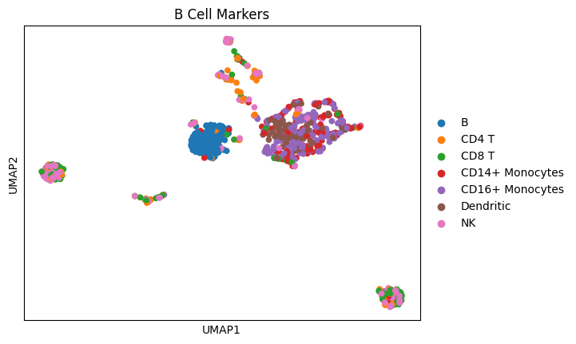
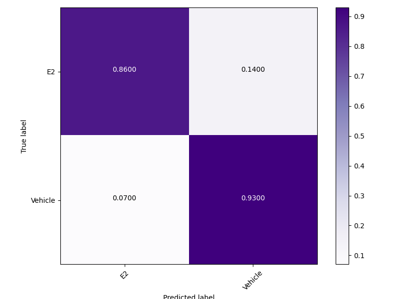
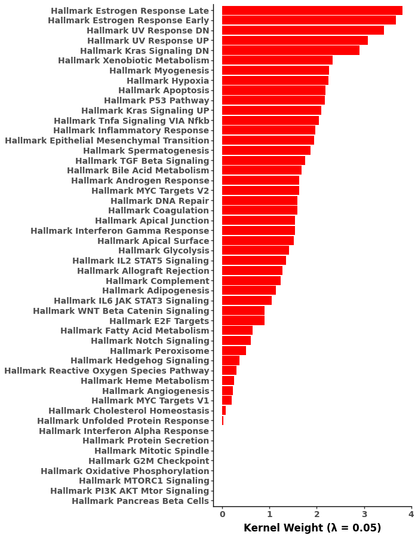
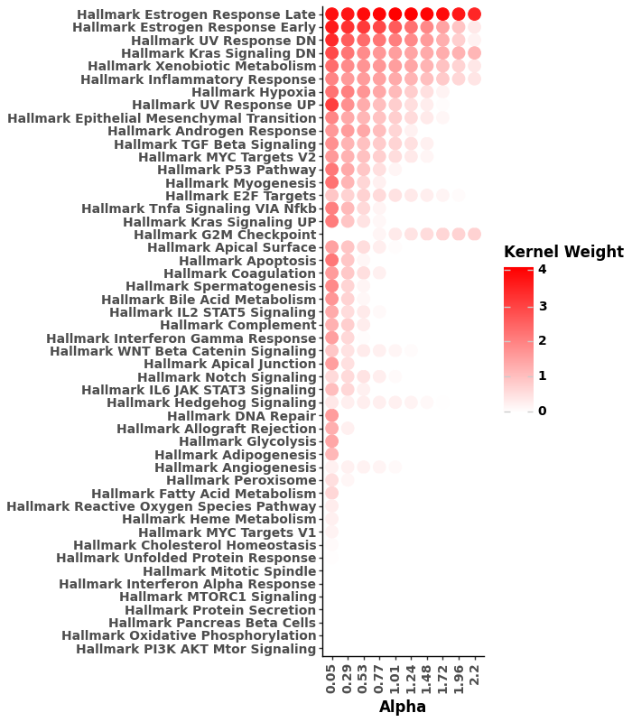
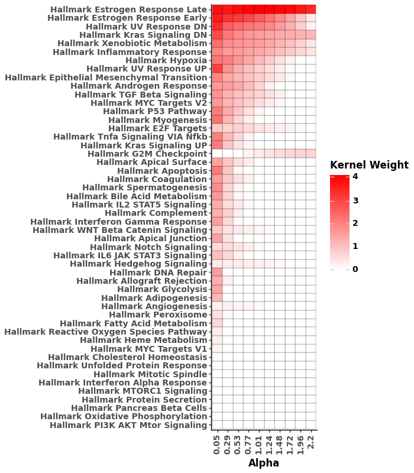

scmkl


Single-cell analysis using Multiple Kernel Learning, scMKL, is a binary classification algorithm utilizing prior information to group features to enhance classification and aid understanding of distinguishing features in omic and multi-omic data sets.
We have demonstrated scMKL's ability to achieve high classification performance while providing the added confidence of model interpretability on single-cell RNA, ATAC, ADT, and methylation data.
Installation
Conda install
Conda is the recommended method to install scMKL:
conda create -n scMKL python=3.12
conda activate scMKL
conda install -c conda-forge -c bioconda ivango17::scmkl
Ensure bioconda and conda-forge are in your available conda channels.
Pip install
First, create a virtual environment with python>=3.11.1,<3.13.
Then, install scMKL with:
# activate your new env with python>=3.11.1 and <3.13
pip install scmkl
If wheels do not build correctly, ensure gcc and g++ are installed and up to date. They can be installed with sudo apt install gcc and sudo apt install g++.
Usage
The table below shows what type of data scMKL expects based on the modality in question. In all situations, matrices should be cells x features.
| Modality | Input matrix description |
|---|---|
| Transcriptomics (RNA) | Counts matrix |
| Chromatin Accessibility (ATAC) | Binarized counts matrix (any counts more than 0 become 1) |
| Epitope (ADT) | Counts matrix |
| Methylomics (MET) | Aggregated methylation over windows (e.g. mean methylation per genomics window) |
Additionally, scMKL requires a feature grouping dictionary where each key,
value pair is represented as 'group1': ['feature1', 'feature2', 'feature7'].
Features can be genes for RNA, regions for ATAC and MET, or proteins for ADT.
Any number of groups can be used and features can be overlapping between
groups (e.g. 'feature1' is in five groups). For help getting feature
groupings, see our notebooks in examples.
scMKL implements AnnData.anndata objects in one of two ways:
1) Taking an existing AnnData.anndata object and formatting it for scMKL to
train and test on.
import scmkl
import numpy as np
import anndata as ad
# Read in your AnnData.anndata obj
adata = ad.read_h5ad('your_adata.h5ad')
# Read in feature grouping dictionary (e.g. geneset library for RNA)
group_dict = np.load('your_grouping.pkl', allow_pickle=True)
# or for RNA, pull a gene set from the internet with
group_dict = scmkl.get_gene_groupings('Azimuth_2021', organism='human')
# Apply scmkl formatting where 'phenotype_obs_key' is the col name in obs
# for labels, can also be an array of labels and set `allow_multiclass` to
# true if there are more than two cell classes
adata = scmkl.format_adata(
adata,
cell_labels='phenotype_obs_key',
group_dict=group_dict,
allow_multiclass=True
)
2) Reading in data separately and creating an scMKL formatted
AnnData.anndata object.
import scmkl
import numpy as np
# Read in feature names
var_names = np.load('your_feature_names.npy')
# Read in feature grouping dictionary (e.g. geneset library for RNA)
group_dict = np.load('your_grouping.pkl', allow_pickle=True)
# or for RNA, pull a gene set from the internet with
group_dict = scmkl.get_gene_groupings('Azimuth_2021', organism='human')
# Read in cell labels
obs = np.load('your_cell_labels.npy')
# Read in data matrix (can also be a scipy.sparse matrix)
mat = np.load('your_matrix.npy')
# Create scMKL formatted AnnData.anndata and set `allow_multiclass` to true
# if there are more than two cell classes
adata = scmkl.create_adata(
data_mat,
feature_names=gene_names,
group_dict=group_dict,
allow_multiclass=True
)
If you are not using RNA data and do not have a grouping dictionary but want to try scMKL on your dataset, you can create a random grouping with:
# Assuming feature names and numpy are loaded
n_groups = 50
group_size = 25
grouping_dict = {f'group_{i}': np.random.choice(
var_names,
size=group_size,
replace=False
)
for i in range(n_groups)}
Then, depending on whether or not your labels are binary, train and test your model.
For binary:
results = scmkl.run(adata)
For multiclass:
results = scmkl.one_v_rest(
adata,
names=['RNA']
)
Both of these functions return a dictionary with evaluation metrics, group weights, etc... To learn more about accessing this data, see our GitHub Pages.
Links
Repo: https://github.com/ohsu-cedar-comp-hub/scMKL
PyPI: https://pypi.org/project/scmkl/
Anaconda: https://anaconda.org/ivango17/scmkl
API: https://ohsu-cedar-comp-hub.github.io/scMKL/
Publication
If you use scMKL in your research, please cite using:
Kupp, S., VanGordon, I., Gönen, M., Esener, S., Eksi, S., Ak, C. Interpretable and integrative analysis of single-cell multiomics with scMKL. Commun Biol 8, 1160 (2025). https://doi.org/10.1038/s42003-025-08533-7
Our Shiny for Python application for viewing data produced from this work can be found here: scMKL_analysis
Issues
Please report bugs here.
Examples
Here are helpful examples for running scMKL, and getting the data required to run scMKL.
| File | Description |
|---|---|
| getting_gene_groupings.ipynb | Different ways to get gene sets in a usable format with scMKL |
| getting_region_groupings.ipynb | How to group genomic regions using a gene set library and a GTF file |
| RNA_analysis.ipynb | Running scMKL using only single-cell RNA data |
| ATAC_analysis.ipynb | Running scMKL using only single-cell ATAC data |
| multimodal_analysis.ipynb | Running scMKL using single-cell multi-omic data (RNA + ATAC) |
scMKL Documentation
1""" 2.. include:: ../README.md 3.. include:: ../example/README.md 4 5---------------------------- 6 7## **scMKL Documentation** 8""" 9 10__version__ = '0.4.3' 11 12__all__ = ['calculate_z', 13 'calculate_d', 14 'create_adata', 15 'data_processing', 16 'dataframes', 17 'estimate_sigma', 18 'extract_results', 19 'find_candidates', 20 'format_adata', 21 'format_group_names', 22 'get_folds', 23 'get_gene_groupings', 24 'get_metrics', 25 'get_region_groupings', 26 'get_selection', 27 'get_summary', 28 'get_weights', 29 'groups_per_alpha', 30 'group_umap', 31 'multimodal_processing', 32 'one_v_rest', 33 'optimize_alpha', 34 'optimize_sparsity', 35 'parse_metrics', 36 'parse_weights', 37 'plotting', 38 'plot_metric', 39 'plot_conf_mat', 40 'prepare_fold', 41 'projections', 42 'process_fold', 43 'read_files', 44 'read_gtf', 45 'run', 46 'sort_groups', 47 'test', 48 'tfidf_normalize', 49 'train_model', 50 'weights_barplot', 51 'weights_dotplot', 52 'weights_heatmap' 53 ] 54 55from scmkl._checks import * 56from scmkl.calculate_z import * 57from scmkl.create_adata import * 58from scmkl.data_processing import * 59from scmkl.dataframes import * 60from scmkl.estimate_sigma import * 61from scmkl.get_gene_groupings import * 62from scmkl.get_region_groupings import * 63from scmkl.multimodal_processing import * 64from scmkl.one_v_rest import * 65from scmkl.optimize_alpha import * 66from scmkl.optimize_sparsity import * 67from scmkl.plotting import * 68from scmkl.projections import * 69from scmkl.run import * 70from scmkl.test import * 71from scmkl.tfidf_normalize import * 72from scmkl.train_model import * 73from scmkl.projections import *
134def calculate_z(adata, n_features=5000, batches=10, 135 batch_size=100) -> ad.AnnData: 136 """ 137 Function to calculate Z matrices for all groups in both training 138 and testing data. 139 140 Parameters 141 ---------- 142 adata : ad.AnnData 143 created by `scmkl.create_adata()` with `adata.uns.keys()`: 144 `'train_indices'`, and `'test_indices'`. 145 146 n_features : int 147 Number of random feature to use when calculating Z; used for 148 scalability. 149 150 batches : int 151 The number of batches to use for the distance calculation. 152 This will average the result of `batches` distance calculations 153 of `batch_size` randomly sampled cells. More batches will converge 154 to population distance values at the cost of scalability. 155 156 batch_size : int 157 The number of cells to include per batch for distance 158 calculations. Higher batch size will converge to population 159 distance values at the cost of scalability. 160 If `batches*batch_size > num_training_cells`, 161 `batch_size` will be reduced to 162 `int(num_training_cells / batches)`. 163 164 Returns 165 ------- 166 adata : ad.AnnData 167 `adata` with Z matrices accessible with `adata.uns['Z_train']` 168 and `adata.uns['Z_test']`. 169 170 Examples 171 -------- 172 >>> adata = scmkl.estimate_sigma(adata) 173 >>> adata = scmkl.calculate_z(adata) 174 >>> adata.uns.keys() 175 dict_keys(['Z_train', 'Z_test', 'sigmas', 'train_indices', 176 'test_indices']) 177 """ 178 # Number of groupings taking from group_dict 179 n_pathway = len(adata.uns['group_dict'].keys()) 180 D = adata.uns['D'] 181 182 sq_i_d = np.sqrt(1/D) 183 184 # Capturing training and testing sizes 185 train_len = len(adata.uns['train_indices']) 186 test_len = len(adata.uns['test_indices']) 187 188 if batch_size * batches > train_len: 189 old_batch_size = batch_size 190 batch_size = int(train_len/batches) 191 print("Specified batch size required too many cells for " 192 "independent batches. Reduced batch size from " 193 f"{old_batch_size} to {batch_size}") 194 195 if 'sigma' not in adata.uns.keys(): 196 n_samples = np.min((2000, train_len)) 197 sample_range = np.arange(n_samples) 198 batch_idx = get_batches(sample_range, adata.uns['seed_obj'], 199 batches=batches, batch_size=batch_size) 200 sigma_indices = sample_cells(adata.uns['train_indices'], n_samples, adata.uns['seed_obj']) 201 202 # Create Arrays to store concatenated group Zs 203 # Each group of features will have a corresponding entry in each array 204 n_cols = 2*adata.uns['D']*n_pathway 205 Z_train = np.zeros((train_len, n_cols), dtype=np.float16) 206 Z_test = np.zeros((test_len, n_cols), dtype=np.float16) 207 208 209 # Setting kernel function 210 match adata.uns['kernel_type'].lower(): 211 case 'gaussian': 212 proj_func = gaussian_trans 213 case 'laplacian': 214 proj_func = laplacian_trans 215 case 'cauchy': 216 proj_func = cauchy_trans 217 218 219 # Loop over each of the groups and creating Z for each 220 z_dtype = np.float16 221 sigma_list = list() 222 for m, group_features in enumerate(adata.uns['group_dict'].values()): 223 224 n_group_features = len(group_features) 225 226 X_train, X_test = get_group_mat(adata, n_features, group_features, 227 n_group_features, process_test=True) 228 229 if adata.uns['tfidf']: 230 X_train, X_test = tfidf_train_test(X_train, X_test) 231 232 # Data filtering, and transformation according to given data_type 233 # Will remove low variance (< 1e5) features regardless of data_type 234 # If scale/transform data depending on .uns values 235 X_train, X_test = process_data(X_train=X_train, X_test=X_test, 236 scale_data=adata.uns['scale_data'], 237 transform_data=adata.uns['transform_data'], 238 return_dense=True, 239 add_ones=adata.uns['add_ones']) 240 241 # Getting sigma 242 if 'sigma' in adata.uns.keys(): 243 sigma = adata.uns['sigma'][m] 244 else: 245 sigma = est_group_sigma(adata, X_train, n_group_features, 246 n_features, batch_idx=batch_idx) 247 sigma_list.append(sigma) 248 249 assert sigma > 0, "Sigma must be more than 0" 250 train_projection, test_projection = calc_groupz(X_train, X_test, 251 adata, D, sigma, 252 proj_func, z_dtype) 253 254 if train_projection.dtype != z_dtype: 255 print("Converting Z dtype from np.float16 to np.float64", 256 flush=True) 257 z_dtype = train_projection.dtype 258 Z_train = Z_train.astype(z_dtype) 259 Z_test = Z_test.astype(z_dtype) 260 261 # Store group Z in whole-Z object 262 # Preserves order to be able to extract meaningful groups 263 cos_idx, sin_idx = get_z_indices(m, D) 264 265 Z_train[0:, cos_idx] = np.cos(train_projection, dtype=z_dtype) 266 Z_train[0:, sin_idx] = np.sin(train_projection, dtype=z_dtype) 267 268 Z_test[0:, cos_idx] = np.cos(test_projection, dtype=z_dtype) 269 Z_test[0:, sin_idx] = np.sin(test_projection, dtype=z_dtype) 270 271 adata.uns['Z_train'] = Z_train*sq_i_d 272 adata.uns['Z_test'] = Z_test*sq_i_d 273 274 if 'sigma' not in adata.uns.keys(): 275 adata.uns['sigma'] = np.array(sigma_list) 276 277 check_for_nan(adata) 278 check_for_inf(adata) 279 280 return adata
Function to calculate Z matrices for all groups in both training and testing data.
Parameters
- adata (ad.AnnData):
created by
scmkl.create_adatawithadata.uns.keys():'train_indices', and'test_indices'. - n_features (int): Number of random feature to use when calculating Z; used for scalability.
- batches (int):
The number of batches to use for the distance calculation.
This will average the result of
batchesdistance calculations ofbatch_sizerandomly sampled cells. More batches will converge to population distance values at the cost of scalability. - batch_size (int):
The number of cells to include per batch for distance
calculations. Higher batch size will converge to population
distance values at the cost of scalability.
If
batches*batch_size > num_training_cells,batch_sizewill be reduced toint(num_training_cells / batches).
Returns
- adata (ad.AnnData):
adatawith Z matrices accessible withadata.uns['Z_train']andadata.uns['Z_test'].
Examples
>>> adata = scmkl.estimate_sigma(adata)
>>> adata = scmkl.calculate_z(adata)
>>> adata.uns.keys()
dict_keys(['Z_train', 'Z_test', 'sigmas', 'train_indices',
'test_indices'])
224def calculate_d(num_samples : int): 225 """ 226 This function calculates the optimal number of dimensions for 227 performance. See https://doi.org/10.48550/arXiv.1806.09178 for more 228 information. 229 230 Parameters 231 ---------- 232 num_samples : int 233 The number of samples in the data set including both training 234 and testing sets. 235 236 Returns 237 ------- 238 d : int 239 The optimal number of dimensions to run scMKL with the given 240 data set. 241 242 Examples 243 -------- 244 >>> raw_counts = scipy.sparse.load_npz('MCF7_counts.npz') 245 >>> 246 >>> num_cells = raw_counts.shape[0] 247 >>> d = scmkl.calculate_d(num_cells) 248 >>> d 249 161 250 """ 251 d = int(np.sqrt(num_samples)*np.log(np.log(num_samples))) 252 253 return int(np.max([d, 100]))
This function calculates the optimal number of dimensions for performance. See https://doi.org/10.48550/arXiv.1806.09178 for more information.
Parameters
- num_samples (int): The number of samples in the data set including both training and testing sets.
Returns
- d (int): The optimal number of dimensions to run scMKL with the given data set.
Examples
>>> raw_counts = scipy.sparse.load_npz('MCF7_counts.npz')
>>>
>>> num_cells = raw_counts.shape[0]
>>> d = scmkl.calculate_d(num_cells)
>>> d
161
330def create_adata(X: scipy.sparse._csc.csc_matrix | np.ndarray | pd.DataFrame, 331 feature_names: np.ndarray, cell_labels: np.ndarray, 332 group_dict: dict, obs_names: None | np.ndarray=None, 333 scale_data: bool=True, transform_data: bool=False, 334 split_data: np.ndarray | None=None, D: int | None=None, 335 remove_features: bool=True, train_ratio: float=0.8, 336 distance_metric: str='euclidean', kernel_type: str='Gaussian', 337 random_state: int=1, allow_multiclass: bool = False, 338 class_threshold: str | int | None = None, 339 reduction: str | None = None, tfidf: bool = False, 340 other_factor: float=1.5, add_ones: bool=False): 341 """ 342 Function to create an AnnData object to carry all relevant 343 information going forward. 344 345 Parameters 346 ---------- 347 X : scipy.sparse.csc_matrix | np.ndarray | pd.DataFrame 348 A data matrix of cells by features (sparse array 349 recommended for large datasets). 350 351 feature_names : np.ndarray 352 Array of feature names corresponding with the features 353 in `X`. 354 355 cell_labels : np.ndarray 356 A numpy array of cell phenotypes corresponding with 357 the cells in `X`. 358 359 group_dict : dict 360 Dictionary containing feature grouping information (i.e. 361 `{geneset1: np.array([gene_1, gene_2, ..., gene_n]), geneset2: 362 np.array([...]), ...}`. 363 364 obs_names : None | np.ndarray 365 The cell names corresponding to `X` to be assigned to output 366 object `.obs_names` attribute. 367 368 scale_data : bool 369 If `True`, data matrix is log transformed and standard 370 scaled. Default is `True`. 371 372 transform_data : bool 373 If `True`, data will be log1p transformed (recommended for 374 counts data). Default is `False`. 375 376 split_data : None | np.ndarray 377 If `None`, data will be split stratified by cell labels. 378 Else, is an array of precalculated train/test split 379 corresponding to samples. Can include labels for entire 380 dataset to benchmark performance or for only training 381 data to classify unknown cell types (i.e. `np.array(['train', 382 'test', ..., 'train'])`. 383 384 D : int 385 Number of Random Fourier Features used to calculate Z. 386 Should be a positive integer. Higher values of D will 387 increase classification accuracy at the cost of computation 388 time. If set to `None`, will be calculated given number of 389 samples. 390 391 remove_features : bool 392 If `True`, will remove features from `X` and `feature_names` 393 not in `group_dict` and remove features from groupings not in 394 `feature_names`. 395 396 train_ratio : float 397 Ratio of number of training samples to entire data set. Note: 398 if a threshold is applied, the ratio training samples may 399 decrease depending on class balance and `class_threshold` 400 parameter if `allow_multiclass = True`. 401 402 distance_metric : str 403 The pairwise distance metric used to estimate sigma. Must 404 be one of the options used in `scipy.spatial.distance.cdist`. 405 406 kernel_type : str 407 The approximated kernel function used to calculate Zs. 408 Must be one of `'Gaussian'`, `'Laplacian'`, or `'Cauchy'`. 409 410 random_state : int 411 Integer random_state used to set the seed for 412 reproducibilty. 413 414 allow_multiclass : bool 415 If `False`, will ensure that cell labels are binary. 416 417 class_threshold : str | int 418 Number of samples allowed in the training data for each cell 419 class in the training data. If `'median'`, the median number 420 of cells per cell class will be the threshold for number of 421 samples per class. 422 423 reduction: str | None 424 Choose which dimension reduction technique to perform on 425 features within a group. 'svd' will run 426 `sklearn.decomposition.TruncatedSVD`, 'linear' will multiply 427 by an array of 1s down to 50 dimensions. 'pca' will replace 428 each group values with 50 PCs from principal component 429 analysis. 430 431 tfidf: bool 432 Whether to calculate TFIDF transformation on peaks within 433 groupings. 434 435 add_ones: bool 436 Allows the addition of ones for downstream functions to run 437 single features. 438 439 Returns 440 ------- 441 adata : ad.AnnData 442 AnnData with the following attributes and keys: 443 444 `adata.X` (array_like): 445 Data matrix. 446 447 `adata.var_names` (array_like): 448 Feature names corresponding to `adata.X`. 449 450 `adata.obs['labels']` (array_like): 451 cell classes/phenotypes from `cell_labels`. 452 453 `adata.uns['train_indices']` (array_like): 454 Indices for training data. 455 456 `adata.uns['test_indices']` (array_like) 457 Indices for testing data. 458 459 `adata.uns['group_dict']` (dict): 460 Grouping information. 461 462 `adata.uns['seed_obj']` (np.random._generator.Generator): 463 Seed object with seed equal to 100 * `random_state`. 464 465 `adata.uns['D']` (int): 466 Number of dimensions to scMKL with. 467 468 `adata.uns['scale_data']` (bool): 469 Whether or not data is scaled. 470 471 `adata.uns['transform_data']` (bool): 472 Whether or not data is log1p transformed. 473 474 `adata.uns['distance_metric']` (str): 475 Distance metric as given. 476 477 `adata.uns['kernel_type']` (str): 478 Kernel function as given. 479 480 `adata.uns['svd']` (bool): 481 Whether to calculate SVD reduction. 482 483 `adata.uns['tfidf']` (bool): 484 Whether to calculate TF-IDF per grouping. 485 486 Examples 487 -------- 488 >>> data_mat = scipy.sparse.load_npz('MCF7_RNA_matrix.npz') 489 >>> gene_names = np.load('MCF7_gene_names.pkl', allow_pickle = True) 490 >>> group_dict = np.load('hallmark_genesets.pkl', 491 >>> allow_pickle = True) 492 >>> 493 >>> adata = scmkl.create_adata(X = data_mat, 494 ... feature_names = gene_names, 495 ... group_dict = group_dict) 496 >>> adata 497 AnnData object with n_obs × n_vars = 1000 × 4341 498 obs: 'labels' 499 uns: 'group_dict', 'seed_obj', 'scale_data', 'D', 'kernel_type', 500 'distance_metric', 'train_indices', 'test_indices' 501 """ 502 assert X.shape[1] == len(feature_names), ("Different number of features " 503 "in X than feature names.") 504 505 if not allow_multiclass: 506 assert len(np.unique(cell_labels)) == 2, ("cell_labels must contain " 507 "2 classes.") 508 509 kernel_options = ['gaussian', 'laplacian', 'cauchy'] 510 assert kernel_type.lower() in kernel_options, ("Given kernel type not " 511 "implemented. Gaussian, " 512 "Laplacian, and Cauchy " 513 "are the acceptable " 514 "types.") 515 516 # Create adata object and add column names 517 adata = ad.AnnData(X) 518 adata.var_names = feature_names 519 520 if isinstance(obs_names, (np.ndarray)): 521 adata.obs_names = obs_names 522 523 filtered_feature_names, group_dict = filter_features(feature_names, 524 group_dict, 525 add_ones) 526 527 # Ensuring that there are common features between feature_names and groups 528 overlap_err = ("No common features between feature names and grouping " 529 "dict. Check grouping.") 530 assert len(filtered_feature_names) > 0, overlap_err 531 532 if remove_features: 533 warnings.filterwarnings('ignore', category = ad.ImplicitModificationWarning) 534 adata = adata[:, filtered_feature_names] 535 536 gc.collect() 537 538 # Add metadata to adata object 539 adata.uns['group_dict'] = group_dict 540 adata.uns['seed_obj'] = np.random.default_rng(100*random_state) 541 adata.uns['scale_data'] = scale_data 542 adata.uns['transform_data'] = transform_data 543 adata.uns['kernel_type'] = kernel_type 544 adata.uns['distance_metric'] = distance_metric 545 adata.uns['reduction'] = reduction if isinstance(reduction, str) else 'None' 546 adata.uns['tfidf'] = tfidf 547 adata.uns['add_ones'] = add_ones 548 549 if (split_data is None): 550 assert X.shape[0] == len(cell_labels), ("Different number of cells " 551 "than labels") 552 adata.obs['labels'] = cell_labels 553 554 if (allow_multiclass == False): 555 split = binary_split(cell_labels, 556 seed_obj = adata.uns['seed_obj'], 557 train_ratio = train_ratio) 558 train_indices, test_indices = split 559 560 elif (allow_multiclass == True): 561 split = multi_class_split(cell_labels, 562 seed_obj = adata.uns['seed_obj'], 563 class_threshold = class_threshold, 564 train_ratio = train_ratio) 565 train_indices, test_indices = split 566 567 adata.uns['labeled_test'] = True 568 569 else: 570 sd_err_message = "`split_data` argument must be of type np.ndarray" 571 assert isinstance(split_data, np.ndarray), sd_err_message 572 x_eq_labs = X.shape[0] == len(cell_labels) 573 train_eq_labs = X.shape[0] == len(cell_labels) 574 assert x_eq_labs or train_eq_labs, ("Must give labels for all cells " 575 "or only for training cells") 576 577 train_indices = np.where(split_data == 'train')[0] 578 test_indices = np.where(split_data == 'test')[0] 579 580 if len(cell_labels) == len(train_indices): 581 582 padded_cell_labels = np.zeros((X.shape[0])).astype('object') 583 padded_cell_labels[train_indices] = cell_labels 584 padded_cell_labels[test_indices] = 'padded_test_label' 585 586 adata.obs['labels'] = padded_cell_labels 587 adata.uns['labeled_test'] = False 588 589 elif len(cell_labels) == len(split_data): 590 adata.obs['labels'] = cell_labels 591 adata.uns['labeled_test'] = True 592 593 # Ensuring all train samples are first in adata object followed by test 594 sort_idx, train_indices, test_indices = sort_samples(train_indices, 595 test_indices) 596 597 adata = adata[sort_idx] 598 599 if not isinstance(obs_names, (np.ndarray)): 600 adata.obs = adata.obs.reset_index(drop=True) 601 adata.obs.index = adata.obs.index.astype('O') 602 603 adata.uns['train_indices'] = train_indices 604 adata.uns['test_indices'] = test_indices 605 606 adata.uns['D'] = get_optimal_d(adata, D, allow_multiclass, other_factor) 607 608 cts, cts_counts = np.unique(adata.obs['labels'], return_counts=True) 609 small_cts = cts[10 > cts_counts] 610 if small_cts.size: 611 print("WARNING: There are less than 10 cells for the " 612 "following label(s):", small_cts, 613 "Can lead to issues running `scmkl.optimize_alpha()`.", 614 sep='\n') 615 if not scale_data: 616 print("WARNING: Data will not be scaled. " 617 "To change this behavior, set scale_data to True") 618 if not transform_data: 619 print("WARNING: Data will not be transformed." 620 "To change this behavior, set transform_data to True") 621 622 # Need to avoid including samples with no obervations 623 # (must be done after feature filtering for grouping) 624 zero_var = np.array(sparse_var(adata.X, axis=1) == 0).ravel() 625 num_zero_var = np.sum(zero_var) 626 if 0 < num_zero_var: 627 print("WARNING: Some samples contain no variance across features " 628 "(likely all zeros), consider removing them and recreating " 629 "AnnData.", flush=True) 630 631 return adata
Function to create an AnnData object to carry all relevant information going forward.
Parameters
- X (scipy.sparse.csc_matrix | np.ndarray | pd.DataFrame): A data matrix of cells by features (sparse array recommended for large datasets).
- feature_names (np.ndarray):
Array of feature names corresponding with the features
in
X. - cell_labels (np.ndarray):
A numpy array of cell phenotypes corresponding with
the cells in
X. - group_dict (dict):
Dictionary containing feature grouping information (i.e.
{geneset1: np.array([gene_1, gene_2, ..., gene_n]), geneset2: np.array([...]), ...}. - obs_names (None | np.ndarray):
The cell names corresponding to
Xto be assigned to output object.obs_namesattribute. - scale_data (bool):
If
True, data matrix is log transformed and standard scaled. Default isTrue. - transform_data (bool):
If
True, data will be log1p transformed (recommended for counts data). Default isFalse. - split_data (None | np.ndarray):
If
None, data will be split stratified by cell labels. Else, is an array of precalculated train/test split corresponding to samples. Can include labels for entire dataset to benchmark performance or for only training data to classify unknown cell types (i.e.np.array(['train', 'test', ..., 'train']). - D (int):
Number of Random Fourier Features used to calculate Z.
Should be a positive integer. Higher values of D will
increase classification accuracy at the cost of computation
time. If set to
None, will be calculated given number of samples. - remove_features (bool):
If
True, will remove features fromXandfeature_namesnot ingroup_dictand remove features from groupings not infeature_names. - train_ratio (float):
Ratio of number of training samples to entire data set. Note:
if a threshold is applied, the ratio training samples may
decrease depending on class balance and
class_thresholdparameter ifallow_multiclass = True. - distance_metric (str):
The pairwise distance metric used to estimate sigma. Must
be one of the options used in
scipy.spatial.distance.cdist. - kernel_type (str):
The approximated kernel function used to calculate Zs.
Must be one of
'Gaussian','Laplacian', or'Cauchy'. - random_state (int): Integer random_state used to set the seed for reproducibilty.
- allow_multiclass (bool):
If
False, will ensure that cell labels are binary. - class_threshold (str | int):
Number of samples allowed in the training data for each cell
class in the training data. If
'median', the median number of cells per cell class will be the threshold for number of samples per class. - reduction (str | None):
Choose which dimension reduction technique to perform on
features within a group. 'svd' will run
sklearn.decomposition.TruncatedSVD, 'linear' will multiply by an array of 1s down to 50 dimensions. 'pca' will replace each group values with 50 PCs from principal component analysis. - tfidf (bool): Whether to calculate TFIDF transformation on peaks within groupings.
- add_ones (bool): Allows the addition of ones for downstream functions to run single features.
Returns
adata (ad.AnnData): AnnData with the following attributes and keys:
adata.X(array_like): Data matrix.adata.var_names(array_like): Feature names corresponding toadata.X.adata.obs['labels'](array_like): cell classes/phenotypes fromcell_labels.adata.uns['train_indices'](array_like): Indices for training data.adata.uns['test_indices'](array_like) Indices for testing data.adata.uns['group_dict'](dict): Grouping information.adata.uns['seed_obj'](np.random._generator.Generator): Seed object with seed equal to 100 *random_state.adata.uns['D'](int): Number of dimensions to scMKL with.adata.uns['scale_data'](bool): Whether or not data is scaled.adata.uns['transform_data'](bool): Whether or not data is log1p transformed.adata.uns['distance_metric'](str): Distance metric as given.adata.uns['kernel_type'](str): Kernel function as given.adata.uns['svd'](bool): Whether to calculate SVD reduction.adata.uns['tfidf'](bool): Whether to calculate TF-IDF per grouping.
Examples
>>> data_mat = scipy.sparse.load_npz('MCF7_RNA_matrix.npz')
>>> gene_names = np.load('MCF7_gene_names.pkl', allow_pickle = True)
>>> group_dict = np.load('hallmark_genesets.pkl',
>>> allow_pickle = True)
>>>
>>> adata = scmkl.create_adata(X = data_mat,
... feature_names = gene_names,
... group_dict = group_dict)
>>> adata
AnnData object with n_obs × n_vars = 1000 × 4341
obs: 'labels'
uns: 'group_dict', 'seed_obj', 'scale_data', 'D', 'kernel_type',
'distance_metric', 'train_indices', 'test_indices'
165def estimate_sigma(adata: ad.AnnData, 166 n_features: int = 5000, 167 batches: int = 10, 168 batch_size: int = 100) -> ad.AnnData: 169 """ 170 Calculate kernel widths to inform distribution for projection of 171 Fourier Features. Calculates one sigma per group of features. 172 173 Parameters 174 ---------- 175 adata : ad.AnnData 176 Created by `create_adata`. 177 178 n_features : int 179 Number of random features to include when estimating sigma. 180 Will be scaled for the whole pathway set according to a 181 heuristic. Used for scalability. 182 183 batches : int 184 The number of batches to use for the distance calculation. 185 This will average the result of `batches` distance calculations 186 of `batch_size` randomly sampled cells. More batches will converge 187 to population distance values at the cost of scalability. 188 189 batch_size : int 190 The number of cells to include per batch for distance 191 calculations. Higher batch size will converge to population 192 distance values at the cost of scalability. 193 If `batches` * `batch_size` > # training cells, 194 `batch_size` will be reduced to `int(num training cells / 195 batches)`. 196 197 Returns 198 ------- 199 adata : ad.AnnData 200 Key added `adata.uns['sigma']` with grouping kernel widths. 201 202 Examples 203 -------- 204 >>> adata = scmkl.estimate_sigma(adata) 205 >>> adata.uns['sigma'] 206 array([10.4640895 , 10.82011454, 6.16769438, 9.86156855, ...]) 207 """ 208 assert batch_size <= len(adata.uns['train_indices']), ("Batch size must be " 209 "smaller than the " 210 "training set.") 211 212 if batch_size * batches > len(adata.uns['train_indices']): 213 old_batch_size = batch_size 214 batch_size = int(len(adata.uns['train_indices'])/batches) 215 print("Specified batch size required too many cells for " 216 "independent batches. Reduced batch size from " 217 f"{old_batch_size} to {batch_size}", flush=True) 218 219 if batch_size > 2000: 220 print("Warning: Batch sizes over 2000 may " 221 "result in long run-time.", flush=True) 222 223 # Getting subsample indices 224 sample_size = np.min((2000, adata.uns['train_indices'].shape[0])) 225 indices = sample_cells(adata.uns['train_indices'], sample_size=sample_size, 226 seed_obj=adata.uns['seed_obj']) 227 228 # Getting batch indices 229 sample_range = np.arange(sample_size) 230 batch_idx = get_batches(sample_range, adata.uns['seed_obj'], 231 batches, batch_size) 232 233 # Loop over every group in group_dict 234 sigma_array = np.zeros((len(adata.uns['group_dict']))) 235 for m, group_features in enumerate(adata.uns['group_dict'].values()): 236 237 n_group_features = len(group_features) 238 239 # Filtering to only features in grouping using filtered view of adata 240 X_train = get_group_mat(adata[indices], n_features=n_features, 241 group_features=group_features, 242 n_group_features=n_group_features, 243 process_test=False) 244 245 if adata.uns['tfidf']: 246 X_train = tfidf(X_train, mode='normalize') 247 248 # Data filtering, and transformation according to given data_type 249 # Will remove low variance (< 1e5) features regardless of data_type 250 # If scale_data will log scale and z-score the data 251 X_train = process_data(X_train=X_train, 252 scale_data=adata.uns['scale_data'], 253 transform_data=adata.uns['transform_data']) 254 255 # Estimating sigma 256 sigma = est_group_sigma(adata, X_train, n_group_features, 257 n_features, batch_idx=batch_idx) 258 259 sigma_array[m] = sigma 260 261 adata.uns['sigma'] = sigma_array 262 263 return adata
Calculate kernel widths to inform distribution for projection of Fourier Features. Calculates one sigma per group of features.
Parameters
- adata (ad.AnnData):
Created by
create_adata. - n_features (int): Number of random features to include when estimating sigma. Will be scaled for the whole pathway set according to a heuristic. Used for scalability.
- batches (int):
The number of batches to use for the distance calculation.
This will average the result of
batchesdistance calculations ofbatch_sizerandomly sampled cells. More batches will converge to population distance values at the cost of scalability. - batch_size (int):
The number of cells to include per batch for distance
calculations. Higher batch size will converge to population
distance values at the cost of scalability.
If
batches*batch_size> # training cells,batch_sizewill be reduced toint(num training cells / batches).
Returns
- adata (ad.AnnData):
Key added
adata.uns['sigma']with grouping kernel widths.
Examples
>>> adata = scmkl.estimate_sigma(adata)
>>> adata.uns['sigma']
array([10.4640895 , 10.82011454, 6.16769438, 9.86156855, ...])
264def extract_results(results: dict, metric: str): 265 """ 266 267 """ 268 summary = {'Alpha' : list(), 269 metric : list(), 270 'Number of Selected Groups' : list(), 271 'Top Group' : list()} 272 273 alpha_list = list(results['Metrics'].keys()) 274 275 # Creating summary DataFrame for each model 276 for alpha in alpha_list: 277 cur_alpha_rows = results['Norms'][alpha] 278 top_weight_rows = np.max(results['Norms'][alpha]) 279 top_group_index = np.where(cur_alpha_rows == top_weight_rows) 280 num_selected = len(results['Selected_groups'][alpha]) 281 top_group_name = np.array(results['Group_names'])[top_group_index] 282 283 if 0 == num_selected: 284 top_group_name = ["No groups selected"] 285 286 summary['Alpha'].append(alpha) 287 summary[metric].append(results['Metrics'][alpha][metric]) 288 summary['Number of Selected Groups'].append(num_selected) 289 summary['Top Group'].append(*top_group_name) 290 291 return pd.DataFrame(summary)
203def find_candidates(organism: str='human', key_terms: str | list='', blacklist: str | list | bool=False): 204 """ 205 Given `organism` and `key_terms`, will search for gene 206 groupings that could fit the datasets/classification task. 207 `blacklist` terms undesired in group names. 208 209 Parameters 210 ---------- 211 organism : str 212 The species the gene grouping is for. Options are 213 `{'Human', 'Mouse', 'Yeast', 'Fly', 'Fish', 'Worm'}` 214 215 key_terms : str | list 216 The types of cells or other specifiers the gene set is for 217 (example: 'CD4 T'). 218 219 blacklist : str | list | bool 220 Term(s) undesired in group names. Ignored unless provided. 221 222 Returns 223 ------- 224 libraries : list 225 A list of gene set library names that could serve for the 226 dataset/classification task. 227 228 Examples 229 -------- 230 >>> scmkl.find_candidates('human', key_terms=' b ') 231 Library No. Gene Sets 232 0 Azimuth_2023 1241 233 1 Azimuth_Cell_Types_2021 341 234 2 Cancer_Cell_Line_Encyclopedia 967 235 3 CellMarker_2024 1134 236 No. Key Type Matching 237 9 238 9 239 0 240 21 241 """ 242 check_organism(organism) 243 244 if organism.lower() in global_lib_orgs: 245 glo = global_lib_orgs.copy() 246 glo.remove(organism) 247 other_org = glo[0] 248 libs = human_genesets 249 libs = [name for name in libs if not other_org in name.lower()] 250 else: 251 libs = gp.get_library_name(organism) 252 other_org = '' 253 254 libs = {name : gp.get_library(name, organism) 255 for name in libs} 256 257 libs_df, _ = check_libs(libs, key_terms, blacklist, other_org) 258 259 return libs_df
Given organism and key_terms, will search for gene
groupings that could fit the datasets/classification task.
blacklist terms undesired in group names.
Parameters
- organism (str):
The species the gene grouping is for. Options are
{'Human', 'Mouse', 'Yeast', 'Fly', 'Fish', 'Worm'} - key_terms (str | list): The types of cells or other specifiers the gene set is for (example: 'CD4 T').
- blacklist (str | list | bool): Term(s) undesired in group names. Ignored unless provided.
Returns
- libraries (list): A list of gene set library names that could serve for the dataset/classification task.
Examples
>>> scmkl.find_candidates('human', key_terms=' b ')
Library No. Gene Sets
0 Azimuth_2023 1241
1 Azimuth_Cell_Types_2021 341
2 Cancer_Cell_Line_Encyclopedia 967
3 CellMarker_2024 1134
No. Key Type Matching
9
9
0
21
634def format_adata(adata: ad.AnnData | str, cell_labels: np.ndarray | str, 635 group_dict: dict | str, use_raw: bool=False, 636 scale_data: bool=True, transform_data: bool=False, 637 split_data: np.ndarray | None=None, D: int | None=None, 638 remove_features: bool=True, train_ratio: float=0.8, 639 distance_metric: str='euclidean', kernel_type: str='Gaussian', 640 random_state: int=1, allow_multiclass: bool = False, 641 class_threshold: str | int | None=None, 642 reduction: str | None=None, tfidf: bool=False, 643 other_factor: float=1.5, add_ones: bool=False): 644 """ 645 Function to format an `ad.AnnData` object to carry all relevant 646 information going forward. `adata.obs_names` will be retained. 647 648 **NOTE: Information not needed for running `scmkl` will be 649 removed.** 650 651 Parameters 652 ---------- 653 adata : ad.AnnData 654 Object with data for `scmkl` to be applied to. Only requirment 655 is that `.var_names` is correct and data matrix is in `adata.X` 656 or `adata.raw.X`. A h5ad file can be provided as a `str` and it 657 will be read in. 658 659 cell_labels : np.ndarray | str 660 If type `str`, the labels for `scmkl` to learn are captured 661 from `adata.obs['cell_labels']`. Else, a `np.ndarray` of cell 662 phenotypes corresponding with the cells in `adata.X`. 663 664 group_dict : dict | str 665 Dictionary containing feature grouping information (i.e. 666 `{geneset1: np.array([gene_1, gene_2, ..., gene_n]), geneset2: 667 np.array([...]), ...}`. A pickle file can be provided as a `str` 668 and it will be read in. 669 670 obs_names : None | np.ndarray 671 The cell names corresponding to `X` to be assigned to output 672 object `.obs_names` attribute. 673 674 use_raw : bool 675 If `False`, will use `adata.X` to create new `adata`. Else, 676 will use `adata.raw.X`. 677 678 scale_data : bool 679 If `True`, data matrix is log transformed and standard 680 scaled. 681 682 transform_data : bool 683 If `True`, data will be log1p transformed (recommended for 684 counts data). Default is `False`. 685 686 split_data : None | np.ndarray 687 If `None`, data will be split stratified by cell labels. 688 Else, is an array of precalculated train/test split 689 corresponding to samples. Can include labels for entire 690 dataset to benchmark performance or for only training 691 data to classify unknown cell types (i.e. `np.array(['train', 692 'test', ..., 'train'])`. 693 694 D : int 695 Number of Random Fourier Features used to calculate Z. 696 Should be a positive integer. Higher values of D will 697 increase classification accuracy at the cost of computation 698 time. If set to `None`, will be calculated given number of 699 samples. 700 701 remove_features : bool 702 If `True`, will remove features from `X` and `feature_names` 703 not in `group_dict` and remove features from groupings not in 704 `feature_names`. 705 706 train_ratio : float 707 Ratio of number of training samples to entire data set. Note: 708 if a threshold is applied, the ratio training samples may 709 decrease depending on class balance and `class_threshold` 710 parameter if `allow_multiclass = True`. 711 712 distance_metric : str 713 The pairwise distance metric used to estimate sigma. Must 714 be one of the options used in `scipy.spatial.distance.cdist`. 715 716 kernel_type : str 717 The approximated kernel function used to calculate Zs. 718 Must be one of `'Gaussian'`, `'Laplacian'`, or `'Cauchy'`. 719 720 random_state : int 721 Integer random_state used to set the seed for 722 reproducibilty. 723 724 allow_multiclass : bool 725 If `False`, will ensure that cell labels are binary. 726 727 class_threshold : str | int 728 Number of samples allowed in the training data for each cell 729 class in the training data. If `'median'`, the median number 730 of cells per cell class will be the threshold for number of 731 samples per class. 732 733 reduction: str | None 734 Choose which dimension reduction technique to perform on 735 features within a group. 'svd' will run 736 `sklearn.decomposition.TruncatedSVD`, 'linear' will multiply 737 by an array of 1s down to 50 dimensions. 738 739 tfidf: bool 740 Whether to calculate TFIDF transformation on peaks within 741 groupings. 742 743 Returns 744 ------- 745 adata : ad.AnnData 746 AnnData with the following attributes and keys: 747 748 `adata.X` (array_like): 749 Data matrix. 750 751 `adata.var_names` (array_like): 752 Feature names corresponding to `adata.X`. 753 754 `adata.obs['labels']` (array_like): 755 cell classes/phenotypes from `cell_labels`. 756 757 `adata.uns['train_indices']` (array_like): 758 Indices for training data. 759 760 `adata.uns['test_indices']` (array_like) 761 Indices for testing data. 762 763 `adata.uns['group_dict']` (dict): 764 Grouping information. 765 766 `adata.uns['seed_obj']` (np.random._generator.Generator): 767 Seed object with seed equal to 100 * `random_state`. 768 769 `adata.uns['D']` (int): 770 Number of dimensions to scMKL with. 771 772 `adata.uns['scale_data']` (bool): 773 Whether or not data is scaled. 774 775 `adata.uns['transform_data']` (bool): 776 Whether or not data is log1p transformed. 777 778 `adata.uns['distance_metric']` (str): 779 Distance metric as given. 780 781 `adata.uns['kernel_type']` (str): 782 Kernel function as given. 783 784 `adata.uns['svd']` (bool): 785 Whether to calculate SVD reduction. 786 787 `adata.uns['tfidf']` (bool): 788 Whether to calculate TF-IDF per grouping. 789 790 Examples 791 -------- 792 >>> adata = ad.read_h5ad('MCF7_rna.h5ad') 793 >>> group_dict = np.load('hallmark_genesets.pkl', 794 >>> allow_pickle = True) 795 >>> 796 >>> 797 >>> # The labels in adata.obs we want to learn are 'celltypes' 798 >>> adata = scmkl.format_adata(adata, 'celltypes', 799 ... group_dict) 800 >>> adata 801 AnnData object with n_obs × n_vars = 1000 × 4341 802 obs: 'labels' 803 uns: 'group_dict', 'seed_obj', 'scale_data', 'D', 'kernel_type', 804 'distance_metric', 'train_indices', 'test_indices' 805 """ 806 if str == type(adata): 807 adata = ad.read_h5ad(adata) 808 809 if str == type(group_dict): 810 group_dict = np.load(group_dict, allow_pickle=True) 811 812 if str == type(cell_labels): 813 err_msg = f"{cell_labels} is not in `adata.obs`" 814 assert cell_labels in adata.obs.keys(), err_msg 815 cell_labels = adata.obs[cell_labels].to_numpy() 816 817 if use_raw: 818 assert adata.raw, "`adata.raw` is empty, set `use_raw` to `False`" 819 X = adata.raw.X 820 else: 821 X = adata.X 822 823 adata = create_adata(X, adata.var_names.to_numpy().copy(), cell_labels, 824 group_dict, adata.obs_names.to_numpy().copy(), 825 scale_data, transform_data, split_data, D, remove_features, 826 train_ratio, distance_metric, kernel_type, 827 random_state, allow_multiclass, class_threshold, 828 reduction, tfidf, other_factor, add_ones) 829 830 return adata
Function to format an ad.AnnData object to carry all relevant
information going forward. adata.obs_names will be retained.
NOTE: Information not needed for running scmkl will be
removed.
Parameters
- adata (ad.AnnData):
Object with data for
scmklto be applied to. Only requirment is that.var_namesis correct and data matrix is inadata.Xoradata.raw.X. A h5ad file can be provided as astrand it will be read in. - cell_labels (np.ndarray | str):
If type
str, the labels forscmklto learn are captured fromadata.obs['cell_labels']. Else, anp.ndarrayof cell phenotypes corresponding with the cells inadata.X. - group_dict (dict | str):
Dictionary containing feature grouping information (i.e.
{geneset1: np.array([gene_1, gene_2, ..., gene_n]), geneset2: np.array([...]), ...}. A pickle file can be provided as astrand it will be read in. - obs_names (None | np.ndarray):
The cell names corresponding to
Xto be assigned to output object.obs_namesattribute. - use_raw (bool):
If
False, will useadata.Xto create newadata. Else, will useadata.raw.X. - scale_data (bool):
If
True, data matrix is log transformed and standard scaled. - transform_data (bool):
If
True, data will be log1p transformed (recommended for counts data). Default isFalse. - split_data (None | np.ndarray):
If
None, data will be split stratified by cell labels. Else, is an array of precalculated train/test split corresponding to samples. Can include labels for entire dataset to benchmark performance or for only training data to classify unknown cell types (i.e.np.array(['train', 'test', ..., 'train']). - D (int):
Number of Random Fourier Features used to calculate Z.
Should be a positive integer. Higher values of D will
increase classification accuracy at the cost of computation
time. If set to
None, will be calculated given number of samples. - remove_features (bool):
If
True, will remove features fromXandfeature_namesnot ingroup_dictand remove features from groupings not infeature_names. - train_ratio (float):
Ratio of number of training samples to entire data set. Note:
if a threshold is applied, the ratio training samples may
decrease depending on class balance and
class_thresholdparameter ifallow_multiclass = True. - distance_metric (str):
The pairwise distance metric used to estimate sigma. Must
be one of the options used in
scipy.spatial.distance.cdist. - kernel_type (str):
The approximated kernel function used to calculate Zs.
Must be one of
'Gaussian','Laplacian', or'Cauchy'. - random_state (int): Integer random_state used to set the seed for reproducibilty.
- allow_multiclass (bool):
If
False, will ensure that cell labels are binary. - class_threshold (str | int):
Number of samples allowed in the training data for each cell
class in the training data. If
'median', the median number of cells per cell class will be the threshold for number of samples per class. - reduction (str | None):
Choose which dimension reduction technique to perform on
features within a group. 'svd' will run
sklearn.decomposition.TruncatedSVD, 'linear' will multiply by an array of 1s down to 50 dimensions. - tfidf (bool): Whether to calculate TFIDF transformation on peaks within groupings.
Returns
adata (ad.AnnData): AnnData with the following attributes and keys:
adata.X(array_like): Data matrix.adata.var_names(array_like): Feature names corresponding toadata.X.adata.obs['labels'](array_like): cell classes/phenotypes fromcell_labels.adata.uns['train_indices'](array_like): Indices for training data.adata.uns['test_indices'](array_like) Indices for testing data.adata.uns['group_dict'](dict): Grouping information.adata.uns['seed_obj'](np.random._generator.Generator): Seed object with seed equal to 100 *random_state.adata.uns['D'](int): Number of dimensions to scMKL with.adata.uns['scale_data'](bool): Whether or not data is scaled.adata.uns['transform_data'](bool): Whether or not data is log1p transformed.adata.uns['distance_metric'](str): Distance metric as given.adata.uns['kernel_type'](str): Kernel function as given.adata.uns['svd'](bool): Whether to calculate SVD reduction.adata.uns['tfidf'](bool): Whether to calculate TF-IDF per grouping.
Examples
>>> adata = ad.read_h5ad('MCF7_rna.h5ad')
>>> group_dict = np.load('hallmark_genesets.pkl',
>>> allow_pickle = True)
>>>
>>>
>>> # The labels in adata.obs we want to learn are 'celltypes'
>>> adata = scmkl.format_adata(adata, 'celltypes',
... group_dict)
>>> adata
AnnData object with n_obs × n_vars = 1000 × 4341
obs: 'labels'
uns: 'group_dict', 'seed_obj', 'scale_data', 'D', 'kernel_type',
'distance_metric', 'train_indices', 'test_indices'
90def format_group_names(group_names: list | pd.Series | np.ndarray, 91 rm_words: list=list()): 92 """ 93 Takes an ArrayLike object of group names and formats them. 94 95 Parameters 96 ---------- 97 group_names : array_like 98 An array of group names to format. 99 100 rm_words : list 101 Words to remove from all group names. 102 103 Returns 104 ------- 105 new_group_names : list 106 Formatted version of the input group names. 107 108 Examples 109 -------- 110 >>> groups = ['HALLMARK_E2F_TARGETS', 'HALLMARK_HYPOXIA'] 111 >>> new_groups = scmkl.format_group_names(groups) 112 >>> new_groups 113 ['Hallmark E2F Targets', 'Hallmark Hypoxia'] 114 """ 115 new_group_names = list() 116 rm_words = [word.lower() for word in rm_words] 117 118 for name in group_names: 119 new_name = list() 120 for word in re.split(r'_|\s', name): 121 if word.isalpha() and (len(word) > 3): 122 word = word.capitalize() 123 if word.lower() not in rm_words: 124 new_name.append(word) 125 new_name = ' '.join(new_name) 126 new_group_names.append(new_name) 127 128 return new_group_names
Takes an ArrayLike object of group names and formats them.
Parameters
- group_names (array_like): An array of group names to format.
- rm_words (list): Words to remove from all group names.
Returns
- new_group_names (list): Formatted version of the input group names.
Examples
>>> groups = ['HALLMARK_E2F_TARGETS', 'HALLMARK_HYPOXIA']
>>> new_groups = scmkl.format_group_names(groups)
>>> new_groups
['Hallmark E2F Targets', 'Hallmark Hypoxia']
47def get_folds(adata: ad.AnnData, k: int): 48 """ 49 With labels of samples for cross validation and number of folds, 50 returns the indices and label for each k-folds. 51 52 Parameters 53 ---------- 54 adata : ad.AnnData 55 `AnnData` object containing `'labels'` column in `.obs` and 56 `'train_indices'` in `.uns`. 57 58 k : int 59 The number of folds to perform cross validation over. 60 61 Returns 62 ------- 63 folds : dict 64 A dictionary with keys being [0, k) and values being a tuple 65 with first element being training sample indices and the second 66 being testing value indices. 67 68 Examples 69 -------- 70 >>> adata = scmkl.create_adata(...) 71 >>> folds = scmkl.get_folds(adata, k=4) 72 >>> 73 >>> train_fold_0, test_fold_0 = folds[0] 74 >>> 75 >>> train_fold_0 76 array([ 0, 3, 5, 6, 8, 9, 10, 11, 12, 13]) 77 >>> test_fold_0 78 array([ 1, 2, 4, 7]) 79 """ 80 y = adata.obs['labels'][adata.uns['train_indices']].copy() 81 82 # Creating dummy x prevents holding more views in memory 83 x = y.copy() 84 85 skf = StratifiedKFold(n_splits=k, shuffle=True, random_state=100) 86 87 folds = dict() 88 for fold, (fold_train, fold_test) in enumerate(skf.split(x, y)): 89 folds[fold] = (fold_train, fold_test) 90 91 return folds
With labels of samples for cross validation and number of folds, returns the indices and label for each k-folds.
Parameters
- adata (ad.AnnData):
AnnDataobject containing'labels'column in.obsand'train_indices'in.uns. - k (int): The number of folds to perform cross validation over.
Returns
- folds (dict): A dictionary with keys being [0, k) and values being a tuple with first element being training sample indices and the second being testing value indices.
Examples
>>> adata = scmkl.create_adata(...)
>>> folds = scmkl.get_folds(adata, k=4)
>>>
>>> train_fold_0, test_fold_0 = folds[0]
>>>
>>> train_fold_0
array([ 0, 3, 5, 6, 8, 9, 10, 11, 12, 13])
>>> test_fold_0
array([ 1, 2, 4, 7])
262def get_gene_groupings(lib_name: str, organism: str='human', key_terms: str | list='', 263 blacklist: str | list | bool=False, min_overlap: int=2, 264 genes: list | tuple | pd.Series | np.ndarray | set=[]): 265 """ 266 Takes a gene set library name and filters to groups containing 267 element(s) in `key_terms`. If genes is provided, will 268 ensure that there are at least `min_overlap` number of genes in 269 each group. Resulting groups will meet all of the before-mentioned 270 criteria if `isin_logic` is `'and'` | `'or'`. 271 272 Parameters 273 ---------- 274 lib_name : str 275 The desired library name. 276 277 organism : str 278 The species the gene grouping is for. Options are 279 `{'Human', 'Mouse', 'Yeast', 'Fly', 'Fish', 'Worm'}`. 280 281 key_terms : str | list 282 The types of cells or other specifiers the gene set is for 283 (example: 'CD4 T'). 284 285 genes : array_like 286 A vector of genes from the reference/query datasets. If not 287 assigned, function will not filter groups based on feature 288 overlap. 289 290 min_overlap : int 291 The minimum number of genes that must be present in a group 292 for it to be kept. If `genes` is not given, ignored. 293 294 Returns 295 ------- 296 lib : dict 297 The filtered library as a `dict` where keys are group names 298 and keys are features. 299 300 Examples 301 -------- 302 >>> dataset_feats = [ 303 ... 'FUCA1', 'CLIC4', 'STMN1', 'SYF2', 'TAS1R1', 304 ... 'NOL9', 'TAS1R3', 'SLC2A5', 'THAP3', 'IGHM', 305 ... 'MARCKS', 'BANK1', 'TNFRSF13B', 'IGKC', 'IGHD', 306 ... 'LINC01857', 'CD24', 'CD37', 'IGHD', 'RALGPS2' 307 ... ] 308 >>> rna_grouping = scmkl.get_gene_groupings( 309 ... 'Azimuth_2023', key_terms=[' b ', 'b cell', 'b '], 310 ... genes=dataset_feats) 311 >>> 312 >>> rna_groupings.keys() 313 dict_keys(['PBMC-L1-B Cell', 'PBMC-L2-Intermediate B Cell', ...]) 314 """ 315 check_organism(organism) 316 317 lib = gp.get_library(lib_name, organism) 318 319 if organism.lower() in global_lib_orgs: 320 glo = global_lib_orgs.copy() 321 glo.remove(organism) 322 other_org = glo[0] 323 else: 324 other_org = '' 325 326 group_names = list(lib.keys()) 327 res = check_groups(group_names, key_terms, blacklist, other_org) 328 del res['num_groups'] 329 330 # Finding groups where group name matches key_terms 331 g_summary = pd.DataFrame(res) 332 333 if key_terms: 334 kept = g_summary['key_terms_in'] 335 kept_groups = g_summary['name'][kept].to_numpy() 336 g_summary = g_summary[kept] 337 else: 338 print("Not filtering with `key_terms` parameter.") 339 kept_groups = g_summary['name'].to_numpy() 340 341 if blacklist: 342 kept = ~g_summary['blacklist_in'] 343 kept_groups = g_summary['name'][kept].to_numpy() 344 else: 345 print("Not filtering with `blacklist` parameter.") 346 347 # Filtering library 348 lib = {group : lib[group] for group in kept_groups} 349 350 if 0 < len(genes): 351 del_groups = list() 352 genes = list(set(genes.copy())) 353 for group, features in lib.items(): 354 overlap = np.isin(features, genes) 355 overlap = np.sum(overlap) 356 if overlap < min_overlap: 357 print(overlap, flush=True) 358 del_groups.append(group) 359 360 # Removing genes without enough overlap 361 for group in del_groups: 362 print(f'Removing {group} from grouping.') 363 del lib[group] 364 365 else: 366 print("Not checking overlap between group and dataset features.") 367 368 return lib
Takes a gene set library name and filters to groups containing
element(s) in key_terms. If genes is provided, will
ensure that there are at least min_overlap number of genes in
each group. Resulting groups will meet all of the before-mentioned
criteria if isin_logic is 'and' | 'or'.
Parameters
- lib_name (str): The desired library name.
- organism (str):
The species the gene grouping is for. Options are
{'Human', 'Mouse', 'Yeast', 'Fly', 'Fish', 'Worm'}. - key_terms (str | list): The types of cells or other specifiers the gene set is for (example: 'CD4 T').
- genes (array_like): A vector of genes from the reference/query datasets. If not assigned, function will not filter groups based on feature overlap.
- min_overlap (int):
The minimum number of genes that must be present in a group
for it to be kept. If
genesis not given, ignored.
Returns
- lib (dict):
The filtered library as a
dictwhere keys are group names and keys are features.
Examples
>>> dataset_feats = [
... 'FUCA1', 'CLIC4', 'STMN1', 'SYF2', 'TAS1R1',
... 'NOL9', 'TAS1R3', 'SLC2A5', 'THAP3', 'IGHM',
... 'MARCKS', 'BANK1', 'TNFRSF13B', 'IGKC', 'IGHD',
... 'LINC01857', 'CD24', 'CD37', 'IGHD', 'RALGPS2'
... ]
>>> rna_grouping = scmkl.get_gene_groupings(
... 'Azimuth_2023', key_terms=[' b ', 'b cell', 'b '],
... genes=dataset_feats)
>>>
>>> rna_groupings.keys()
dict_keys(['PBMC-L1-B Cell', 'PBMC-L2-Intermediate B Cell', ...])
398def get_metrics(results: dict, include_as: bool=False) -> pd.DataFrame: 399 """ 400 Takes either a single scMKL result or a dictionary where each 401 entry cooresponds to one result. Returns a dataframe with cols 402 ['Alpha', 'Metric', 'Value']. If `include_as == True`, another 403 col of booleans will be added to indicate whether or not the run 404 respective to that alpha was chosen as optimal via CV. If 405 `include_key == True`, another column will be added with the name 406 of the key to the respective file (only applicable with multiple 407 results). 408 409 Parameters 410 ---------- 411 results : dict | None 412 A dictionary with the results of a single run from 413 `scmkl.run()`. Must be `None` if `rfiles is not None`. 414 415 rfiles : dict | None 416 A dictionary of results dictionaries containing multiple 417 results from `scmkl.run()`. 418 419 include_as : bool 420 When `True`, will add a bool col to output pd.DataFrame 421 where rows with alphas cooresponding to alpha_star will be 422 `True`. 423 424 Returns 425 ------- 426 df : pd.DataFrame 427 A pd.DataFrame containing all of the metrics present from 428 the runs input. 429 430 Examples 431 -------- 432 >>> # For a single file 433 >>> results = scmkl.run(adata) 434 >>> metrics = scmkl.get_metrics(results = results) 435 436 >>> # For multiple runs saved in a dict 437 >>> output_dir = 'scMKL_outputs/' 438 >>> rfiles = scmkl.read_files(output_dir) 439 >>> metrics = scmkl.get_metrics(rfiles=rfiles) 440 """ 441 # Checking which data is being worked with 442 is_mult, is_many = _parse_result_type(results) 443 444 # Initiating col list with minimal columns 445 cols = ['Alpha', 'Metric', 'Value'] 446 447 if include_as: 448 cols.append('Alpha Star') 449 if is_mult: 450 cols.append('Class') 451 452 if is_many: 453 cols.append('Key') 454 df = pd.DataFrame(columns = cols) 455 for key, result in results.items(): 456 cur_df = parse_metrics(results = result, key = key, 457 include_as = include_as) 458 df = pd.concat([df, cur_df.copy()]) 459 460 else: 461 df = parse_metrics(results = results, include_as = include_as) 462 463 return df
Takes either a single scMKL result or a dictionary where each
entry cooresponds to one result. Returns a dataframe with cols
['Alpha', 'Metric', 'Value']. If include_as == True, another
col of booleans will be added to indicate whether or not the run
respective to that alpha was chosen as optimal via CV. If
include_key == True, another column will be added with the name
of the key to the respective file (only applicable with multiple
results).
Parameters
- results (dict | None):
A dictionary with the results of a single run from
scmkl.run. Must beNoneifrfiles is not None. - rfiles (dict | None):
A dictionary of results dictionaries containing multiple
results from
scmkl.run. - include_as (bool):
When
True, will add a bool col to output pd.DataFrame where rows with alphas cooresponding to alpha_star will beTrue.
Returns
- df (pd.DataFrame): A pd.DataFrame containing all of the metrics present from the runs input.
Examples
>>> # For a single file
>>> results = scmkl.run(adata)
>>> metrics = scmkl.get_metrics(results = results)
>>> # For multiple runs saved in a dict
>>> output_dir = 'scMKL_outputs/'
>>> rfiles = scmkl.read_files(output_dir)
>>> metrics = scmkl.get_metrics(rfiles=rfiles)
290def get_region_groupings(gene_anno : pd.DataFrame, gene_sets : dict, 291 feature_names : np.ndarray | pd.Series | list | set, 292 len_up : int = 5000, len_down : int = 5000) -> dict: 293 """ 294 Creates a peak set where keys are gene set names from `gene_sets` 295 and values are arrays of features pulled from `feature_names`. 296 Features are added to each peak set given overlap between regions 297 in single-cell data matrix and inferred gene promoter regions in 298 `gene_anno`. 299 300 Parameters 301 ---------- 302 gene_anno : pd.DataFrame 303 Gene annotations in GTF format as a pd.DataFrame with columns 304 `['chr', 'start', 'end', 'strand', 'gene_name']`. 305 306 gene_sets : dict 307 Gene set names as keys and an iterable object of gene names 308 as values. 309 310 feature_names : array_like | set 311 Feature names corresponding to a single_cell epigenetic data 312 matrix. 313 314 Returns 315 ------- 316 epi_grouping : dict 317 Keys are the names from `gene_sets` and values 318 are a list of regions from `feature_names` that overlap with 319 promotor regions respective to genes in `gene_sets` (i.e., if 320 region in `feature_names` overlaps with promotor region from a 321 gene in a gene set from `gene_sets`, that region will be added 322 to the new dictionary under the respective gene set name). 323 324 Examples 325 -------- 326 >>> # Reading in a gene set and the peak names from dataset 327 >>> gene_sets = np.load("data/RNA_hallmark_groupings.pkl", 328 ... allow_pickle = True) 329 >>> peaks = np.load("data/MCF7_region_names.npy", 330 ... allow_pickle = True) 331 >>> 332 >>> # Reading in GTF file 333 >>> gtf_path = "data/hg38_subset_protein_coding.annotation.gtf" 334 >>> gtf = scmkl.read_gtf(gtf_path, filter_to_coding=True) 335 >>> 336 >>> region_grouping = scmkl.get_region_groupings(gene_anno = gtf, 337 ... gene_sets = gene_sets, 338 ... feature_names = peaks) 339 >>> 340 >>> region_grouping.keys() 341 dict_keys(['HALLMARK_TNFA_SIGNALING_VIA_NFKB', ...]) 342 """ 343 # Getting a unique set of gene names from gene_sets 344 all_genes = {gene for group in gene_sets.keys() 345 for gene in gene_sets[group]} 346 347 # Filtering out NaN values 348 all_genes = [gene for gene in all_genes if type(gene) != float] 349 350 # Filtering out annotations for genes not present in gene_sets 351 gene_anno = gene_anno[np.isin(gene_anno['gene_name'], all_genes)] 352 353 # Adjusting start and end columns to represent promotor regions 354 gene_anno = adjust_regions(gene_anno = gene_anno, 355 len_up = len_up, len_down = len_down) 356 357 # Creating a dictionary from assay features where [chr] : (start, end) 358 feature_dict = create_feature_dict(feature_names) 359 360 # Creating data structures from gene_anno for comparing regions 361 peak_gene_dict, ga_regions = create_region_dicts(gene_anno) 362 363 # Capturing the separator type used in assay 364 chr_sep = ':' if ':' in feature_names[0] else '-' 365 366 epi_groupings = compare_regions(feature_dict = feature_dict, 367 ga_regions = ga_regions, 368 peak_gene_dict = peak_gene_dict, 369 gene_sets = gene_sets, 370 chr_sep = chr_sep) 371 372 return epi_groupings
Creates a peak set where keys are gene set names from gene_sets
and values are arrays of features pulled from feature_names.
Features are added to each peak set given overlap between regions
in single-cell data matrix and inferred gene promoter regions in
gene_anno.
Parameters
- gene_anno (pd.DataFrame):
Gene annotations in GTF format as a pd.DataFrame with columns
['chr', 'start', 'end', 'strand', 'gene_name']. - gene_sets (dict): Gene set names as keys and an iterable object of gene names as values.
- feature_names (array_like | set): Feature names corresponding to a single_cell epigenetic data matrix.
Returns
- epi_grouping (dict):
Keys are the names from
gene_setsand values are a list of regions fromfeature_namesthat overlap with promotor regions respective to genes ingene_sets(i.e., if region infeature_namesoverlaps with promotor region from a gene in a gene set fromgene_sets, that region will be added to the new dictionary under the respective gene set name).
Examples
>>> # Reading in a gene set and the peak names from dataset
>>> gene_sets = np.load("data/RNA_hallmark_groupings.pkl",
... allow_pickle = True)
>>> peaks = np.load("data/MCF7_region_names.npy",
... allow_pickle = True)
>>>
>>> # Reading in GTF file
>>> gtf_path = "data/hg38_subset_protein_coding.annotation.gtf"
>>> gtf = scmkl.read_gtf(gtf_path, filter_to_coding=True)
>>>
>>> region_grouping = scmkl.get_region_groupings(gene_anno = gtf,
... gene_sets = gene_sets,
... feature_names = peaks)
>>>
>>> region_grouping.keys()
dict_keys(['HALLMARK_TNFA_SIGNALING_VIA_NFKB', ...])
531def get_selection(weights_df: pd.DataFrame, 532 order_groups: bool=False) -> pd.DataFrame: 533 """ 534 This function takes a pd.DataFrame created by 535 `scmkl.get_weights()` and returns a selection table. Selection 536 refers to how many times a group had a nonzero group weight. To 537 calculate this, a col is added indicating whether the group was 538 selected. Then, the dataframe is grouped by alpha and group. 539 Selection can then be summed returning a dataframe with cols 540 `['Alpha', 'Group', Selection]`. If is the result of multiclass 541 run(s), `'Class'` column must be present and will be in resulting 542 df as well. 543 544 Parameters 545 ---------- 546 weights_df : pd.DataFrame 547 A dataframe output by `scmkl.get_weights()` with cols 548 `['Alpha', 'Group', 'Kernel Weight']`. If is the result of 549 multiclass run(s), `'Class'` column must be present as well. 550 551 order_groups : bool 552 If `True`, the `'Group'` col of the output dataframe will be 553 made into a `pd.Categorical` col ordered by number of times 554 each group was selected in decending order. 555 556 Returns 557 ------- 558 df : pd.DataFrame 559 A dataframe with cols `['Alpha', 'Group', Selection]`. Also, 560 `'Class'` column if is a multiclass result. 561 562 Example 563 ------- 564 >>> # For a single file 565 >>> results = scmkl.run(adata) 566 >>> weights = scmkl.get_weights(results = results) 567 >>> selection = scmkl.get_selection(weights) 568 569 >>> # For multiple runs saved in a dict 570 >>> output_dir = 'scMKL_outputs/' 571 >>> rfiles = scmkl.read_files(output_dir) 572 >>> weights = scmkl.get_weights(rfiles=rfiles) 573 >>> selection = scmkl.get_selection(weights) 574 """ 575 # Adding col indicating whether or not groups have nonzero weight 576 selection = weights_df['Kernel Weight'].apply(lambda x: x > 0) 577 weights_df['Selection'] = selection 578 579 # Summing selection across replications to get selection 580 is_mult = 'Class' in weights_df.columns 581 if is_mult: 582 df = weights_df.groupby(['Alpha', 'Group', 'Class'])['Selection'].sum() 583 else: 584 df = weights_df.groupby(['Alpha', 'Group'])['Selection'].sum() 585 df = df.reset_index() 586 587 # Getting group order 588 if order_groups and not is_mult: 589 order = df.groupby('Group')['Selection'].sum() 590 order = order.reset_index().sort_values(by = 'Selection', 591 ascending = False) 592 order = order['Group'] 593 df['Group'] = pd.Categorical(df['Group'], categories = order) 594 595 596 return df
This function takes a pd.DataFrame created by
scmkl.get_weights() and returns a selection table. Selection
refers to how many times a group had a nonzero group weight. To
calculate this, a col is added indicating whether the group was
selected. Then, the dataframe is grouped by alpha and group.
Selection can then be summed returning a dataframe with cols
['Alpha', 'Group', Selection]. If is the result of multiclass
run(s), 'Class' column must be present and will be in resulting
df as well.
Parameters
- weights_df (pd.DataFrame):
A dataframe output by
scmkl.get_weights()with cols['Alpha', 'Group', 'Kernel Weight']. If is the result of multiclass run(s),'Class'column must be present as well. - order_groups (bool):
If
True, the'Group'col of the output dataframe will be made into apd.Categoricalcol ordered by number of times each group was selected in decending order.
Returns
- df (pd.DataFrame):
A dataframe with cols
['Alpha', 'Group', Selection]. Also,'Class'column if is a multiclass result.
Example
>>> # For a single file
>>> results = scmkl.run(adata)
>>> weights = scmkl.get_weights(results = results)
>>> selection = scmkl.get_selection(weights)
>>> # For multiple runs saved in a dict
>>> output_dir = 'scMKL_outputs/'
>>> rfiles = scmkl.read_files(output_dir)
>>> weights = scmkl.get_weights(rfiles=rfiles)
>>> selection = scmkl.get_selection(weights)
294def get_summary(results: dict, metric: str='AUROC'): 295 """ 296 Takes the results from `scmkl.run()` and generates a dataframe 297 for each model containing columns for alpha, area under the ROC, 298 number of groups with nonzero weights, and highest weighted 299 group. 300 301 Parameters 302 ---------- 303 results : dict 304 A dictionary of results from scMKL generated from 305 `scmkl.run()`. 306 307 metric : str 308 Which metric to include in the summary. Default is AUROC. 309 Options include `'AUROC'`, `'Recall'`, `'Precision'`, 310 `'Accuracy'`, and `'F1-Score'`. 311 312 Returns 313 ------- 314 summary_df : pd.DataFrame 315 A table with columns: `['Alpha', 'AUROC', 316 'Number of Selected Groups', 'Top Group']`. 317 318 Examples 319 -------- 320 >>> results = scmkl.run(adata, alpha_list) 321 >>> summary_df = scmkl.get_summary(results) 322 ... 323 >>> summary_df.head() 324 Alpha AUROC Number of Selected Groups 325 0 2.20 0.8600 3 326 1 1.96 0.9123 4 327 2 1.72 0.9357 5 328 3 1.48 0.9524 7 329 4 1.24 0.9666 9 330 Top Group 331 0 RNA-HALLMARK_E2F_TARGETS 332 1 RNA-HALLMARK_ESTROGEN_RESPONSE_EARLY 333 2 RNA-HALLMARK_ESTROGEN_RESPONSE_EARLY 334 3 RNA-HALLMARK_ESTROGEN_RESPONSE_EARLY 335 4 RNA-HALLMARK_ESTROGEN_RESPONSE_EARLY 336 """ 337 is_multi, is_many = _parse_result_type(results) 338 assert not is_many, "This function only supports single results" 339 340 if is_multi: 341 summaries = list() 342 for ct in results['Classes']: 343 data = extract_results(results[ct], metric) 344 data['Class'] = [ct]*len(data) 345 summaries.append(data.copy()) 346 summary = pd.concat(summaries) 347 348 else: 349 summary = extract_results(results, metric) 350 351 return summary
Takes the results from scmkl.run and generates a dataframe
for each model containing columns for alpha, area under the ROC,
number of groups with nonzero weights, and highest weighted
group.
Parameters
- results (dict):
A dictionary of results from scMKL generated from
scmkl.run. - metric (str):
Which metric to include in the summary. Default is AUROC.
Options include
'AUROC','Recall','Precision','Accuracy', and'F1-Score'.
Returns
- summary_df (pd.DataFrame):
A table with columns:
['Alpha', 'AUROC', 'Number of Selected Groups', 'Top Group'].
Examples
>>> results = scmkl.run(adata, alpha_list)
>>> summary_df = scmkl.get_summary(results)
...
>>> summary_df.head()
Alpha AUROC Number of Selected Groups
0 2.20 0.8600 3
1 1.96 0.9123 4
2 1.72 0.9357 5
3 1.48 0.9524 7
4 1.24 0.9666 9
Top Group
0 RNA-HALLMARK_E2F_TARGETS
1 RNA-HALLMARK_ESTROGEN_RESPONSE_EARLY
2 RNA-HALLMARK_ESTROGEN_RESPONSE_EARLY
3 RNA-HALLMARK_ESTROGEN_RESPONSE_EARLY
4 RNA-HALLMARK_ESTROGEN_RESPONSE_EARLY
466def get_weights(results : dict, include_as : bool = False) -> pd.DataFrame: 467 """ 468 Takes either a single scMKL result or dictionary of results and 469 returns a pd.DataFrame with cols ['Alpha', 'Group', 470 'Kernel Weight']. If `include_as == True`, a fourth col will be 471 added to indicate whether or not the run respective to that alpha 472 was chosen as optimal via cross validation. 473 474 Parameters 475 ---------- 476 results : dict | None 477 A dictionary with the results of a single run from 478 `scmkl.run()`. Must be `None` if `rfiles is not None`. 479 480 rfiles : dict | None 481 A dictionary of results dictionaries containing multiple 482 results from `scmkl.run()`. 483 484 include_as : bool 485 When `True`, will add a bool col to output pd.DataFrame 486 where rows with alphas cooresponding to alpha_star will be 487 `True`. 488 489 Returns 490 ------- 491 df : pd.DataFrame 492 A pd.DataFrame containing all of the groups from each alpha 493 and their cooresponding kernel weights. 494 495 Examples 496 -------- 497 >>> # For a single file 498 >>> results = scmkl.run(adata) 499 >>> weights = scmkl.get_weights(results = results) 500 501 >>> # For multiple runs saved in a dict 502 >>> output_dir = 'scMKL_outputs/' 503 >>> rfiles = scmkl.read_files(output_dir) 504 >>> weights = scmkl.get_weights(rfiles=rfiles) 505 """ 506 # Checking which data is being worked with 507 is_mult, is_many = _parse_result_type(results) 508 509 # Initiating col list with minimal columns 510 cols = ['Alpha', 'Group', 'Kernel Weight'] 511 512 if include_as: 513 cols.append('Alpha Star') 514 if is_mult: 515 cols.append('Class') 516 517 if is_many: 518 cols.append('Key') 519 df = pd.DataFrame(columns = cols) 520 for key, result in results.items(): 521 cur_df = parse_weights(results = result, key = key, 522 include_as = include_as) 523 df = pd.concat([df, cur_df.copy()]) 524 525 else: 526 df = parse_weights(results = results, include_as = include_as) 527 528 return df
Takes either a single scMKL result or dictionary of results and
returns a pd.DataFrame with cols ['Alpha', 'Group',
'Kernel Weight']. If include_as == True, a fourth col will be
added to indicate whether or not the run respective to that alpha
was chosen as optimal via cross validation.
Parameters
- results (dict | None):
A dictionary with the results of a single run from
scmkl.run. Must beNoneifrfiles is not None. - rfiles (dict | None):
A dictionary of results dictionaries containing multiple
results from
scmkl.run. - include_as (bool):
When
True, will add a bool col to output pd.DataFrame where rows with alphas cooresponding to alpha_star will beTrue.
Returns
- df (pd.DataFrame): A pd.DataFrame containing all of the groups from each alpha and their cooresponding kernel weights.
Examples
>>> # For a single file
>>> results = scmkl.run(adata)
>>> weights = scmkl.get_weights(results = results)
>>> # For multiple runs saved in a dict
>>> output_dir = 'scMKL_outputs/'
>>> rfiles = scmkl.read_files(output_dir)
>>> weights = scmkl.get_weights(rfiles=rfiles)
599def groups_per_alpha(selection_df: pd.DataFrame) -> dict: 600 """ 601 This function takes a pd.DataFrame from `scmkl.get_selection()` 602 generated from multiple scMKL results and returns a dictionary 603 with keys being alphas from the input dataframe and values being 604 the mean number of selected groups for a given alpha across 605 results. 606 607 Parameters 608 ---------- 609 selection_df : pd.DataFrame 610 A dataframe output by `scmkl.get_selection()` with cols 611 `['Alpha', 'Group', Selection]. 612 613 Returns 614 ------- 615 mean_groups : dict 616 A dictionary with alphas as keys and the mean number of 617 selected groups for that alpha as keys. 618 619 Examples 620 -------- 621 >>> weights = scmkl.get_weights(rfiles) 622 >>> selection = scmkl.get_selection(weights) 623 >>> mean_groups = scmkl.mean_groups_per_alpha(selection) 624 >>> mean_groups = {alpha : np.round(num_selected, 1) 625 ... for alpha, num_selected in mean_groups.items()} 626 >>> 627 >>> print(mean_groups) 628 {0.05 : 50.0, 0.2 : 24.7, 1.1 : 5.3} 629 """ 630 mean_groups = {} 631 for alpha in np.unique(selection_df['Alpha']): 632 633 # Capturing rows for given alpha 634 rows = selection_df['Alpha'] == alpha 635 636 # Adding mean number of groups for alpha 637 mean_groups[alpha] = np.mean(selection_df[rows]['Selection']) 638 639 return mean_groups
This function takes a pd.DataFrame from scmkl.get_selection()
generated from multiple scMKL results and returns a dictionary
with keys being alphas from the input dataframe and values being
the mean number of selected groups for a given alpha across
results.
Parameters
- selection_df (pd.DataFrame):
A dataframe output by
scmkl.get_selection()with cols `['Alpha', 'Group', Selection].
Returns
- mean_groups (dict): A dictionary with alphas as keys and the mean number of selected groups for that alpha as keys.
Examples
>>> weights = scmkl.get_weights(rfiles)
>>> selection = scmkl.get_selection(weights)
>>> mean_groups = scmkl.mean_groups_per_alpha(selection)
>>> mean_groups = {alpha : np.round(num_selected, 1)
... for alpha, num_selected in mean_groups.items()}
>>>
>>> print(mean_groups)
{0.05 : 50.0, 0.2 : 24.7, 1.1 : 5.3}
613def group_umap(adata: ad.AnnData, g_name: str | list, is_binary: bool=False, 614 labels: None | np.ndarray | list=None, title: str='', 615 save: str=''): 616 """ 617 Uses a scmkl formatted `ad.AnnData` object to show sample 618 separation using scmkl discovered groupings. 619 620 Parameters 621 ---------- 622 adata : ad.AnnData 623 A scmkl formatted `ad.AnnData` object with `'group_dict'` in 624 `.uns`. 625 626 g_name : str | list 627 The groups who's features should be used to filter `adata`. If 628 is a list, features from multiple groups will be used. 629 630 is_binary : bool 631 If `True`, data will be processed using `muon` which includes 632 TF-IDF normalization and LSI. 633 634 labels : None | np.ndarray | list 635 If `None`, labels in `adata.obs['labels']` will be used to 636 color umap points. Else, provided labels will be used to color 637 points. 638 639 title : str 640 The title of the plot. 641 642 save : str 643 If provided, plot will be saved using `scanpy`'s `save` 644 argument. Should be the desired file name. Output will be 645 `<cwd>/figures/<save>`. 646 647 Returns 648 ------- 649 None 650 651 Examples 652 -------- 653 >>> adata_fp = 'data/_pbmc_rna.h5ad' 654 >>> group_fp = 'data/_RNA_azimuth_pbmc_groupings.pkl' 655 >>> adata = scmkl.format_adata(adata_fp, 'celltypes', group_fp, 656 ... allow_multiclass=True) 657 >>> scmkl.group_umap(adata, 'CD16+ Monocyte Markers') 658 659  660 """ 661 if list == type(g_name): 662 feats = {feature 663 for group in g_name 664 for feature in adata.uns['group_dict'][group]} 665 feats = np.array(list(feats)) 666 else: 667 feats = np.array(list(adata.uns['group_dict'][g_name])) 668 669 if labels: 670 assert len(labels) == adata.shape[0], "`labels` do not match `adata`" 671 adata.obs['labels'] = labels 672 673 var_names = adata.var_names.to_numpy() 674 675 col_filter = np.isin(var_names, feats) 676 adata = adata[:, col_filter].copy() 677 678 if not is_binary: 679 sc.pp.normalize_total(adata) 680 sc.pp.log1p(adata) 681 sc.tl.pca(adata) 682 sc.pp.neighbors(adata) 683 sc.tl.umap(adata, random_state=1) 684 685 else: 686 ac.pp.tfidf(adata) 687 sc.pp.normalize_total(adata) 688 sc.pp.log1p(adata) 689 ac.tl.lsi(adata) 690 sc.pp.scale(adata) 691 sc.tl.pca(adata) 692 sc.pp.neighbors(adata, n_neighbors=10, n_pcs=30) 693 sc.tl.umap(adata, random_state=1) 694 695 if save: 696 sc.pl.umap(adata, title=title, color='labels', save=save, show=False) 697 698 else: 699 sc.pl.umap(adata, title=title, color='labels') 700 701 return None
Uses a scmkl formatted ad.AnnData object to show sample
separation using scmkl discovered groupings.
Parameters
- adata (ad.AnnData):
A scmkl formatted
ad.AnnDataobject with'group_dict'in.uns. - g_name (str | list):
The groups who's features should be used to filter
adata. If is a list, features from multiple groups will be used. - is_binary (bool):
If
True, data will be processed usingmuonwhich includes TF-IDF normalization and LSI. - labels (None | np.ndarray | list):
If
None, labels inadata.obs['labels']will be used to color umap points. Else, provided labels will be used to color points. - title (str): The title of the plot.
- save (str):
If provided, plot will be saved using
scanpy'ssaveargument. Should be the desired file name. Output will be<cwd>/figures/<save>.
Returns
- None
Examples
>>> adata_fp = 'data/_pbmc_rna.h5ad'
>>> group_fp = 'data/_RNA_azimuth_pbmc_groupings.pkl'
>>> adata = scmkl.format_adata(adata_fp, 'celltypes', group_fp,
... allow_multiclass=True)
>>> scmkl.group_umap(adata, 'CD16+ Monocyte Markers')

101def multimodal_processing(adatas : list[ad.AnnData], names : list[str], 102 tfidf: list[bool], combination: str='concatenate', 103 batches: int=10, batch_size: int=100, 104 verbose: bool=True) -> ad.AnnData: 105 """ 106 Combines and processes a list of `ad.AnnData` objects. 107 108 Parameters 109 ---------- 110 adatas : list[ad.AnnData] 111 List of `ad.AnnData` objects where each object is a different 112 modality. Annotations must match between objects (i.e. same 113 sample order). 114 115 names : list[str] 116 List of strings names for each modality repective to each 117 object in adatas. 118 119 combination: str 120 How to combine the matrices, either `'sum'` or `'concatenate'`. 121 122 tfidf : list[bool] 123 If element `i` is `True`, `adata[i]` will be TF-IDF normalized. 124 125 batches : int 126 The number of batches to use for the distance calculation. 127 This will average the result of `batches` distance calculations 128 of `batch_size` randomly sampled cells. More batches will converge 129 to population distance values at the cost of scalability. 130 131 batch_size : int 132 The number of cells to include per batch for distance 133 calculations. Higher batch size will converge to population 134 distance values at the cost of scalability. 135 If `batches*batch_size > num_training_cells`, `batch_size` 136 will be reduced to `int(num_training_cells / batches)`. 137 138 Returns 139 ------- 140 adata : ad.AnnData 141 Concatenated from objects from `adatas` with Z matrices 142 calculated. 143 144 Examples 145 -------- 146 >>> rna_adata = scmkl.create_adata(X = mcf7_rna_mat, 147 ... feature_names=gene_names, 148 ... scale_data=True, 149 ... transform_data=True, 150 ... cell_labels=cell_labels, 151 ... group_dict=rna_grouping) 152 >>> 153 >>> atac_adata = scmkl.create_adata(X=mcf7_atac_mat, 154 ... feature_names=peak_names, 155 ... scale_data=False, 156 ... cell_labels=cell_labels, 157 ... group_dict=atac_grouping) 158 >>> 159 >>> adatas = [rna_adata, atac_adata] 160 >>> mod_names = ['rna', 'atac'] 161 >>> adata = scmkl.multimodal_processing(adatas = adatas, 162 ... names = mod_names, 163 ... tfidf = [False, True]) 164 >>> 165 >>> adata 166 AnnData object with n_obs × n_vars = 1000 × 12676 167 obs: 'labels' 168 var: 'labels' 169 uns: 'D', 'kernel_type', 'distance_metric', 'train_indices', 170 'test_indices', 'Z_train', 'Z_test', 'group_dict', 'seed_obj' 171 """ 172 import warnings 173 warnings.filterwarnings('ignore') 174 175 diff_num_warn = "Different number of cells present in each object." 176 assert all([adata.shape[0] for adata in adatas]), diff_num_warn 177 178 # True if all train indices match 179 same_train = np.all([np.array_equal(adatas[0].uns['train_indices'], 180 adatas[i].uns['train_indices']) 181 for i in range(1, len(adatas))]) 182 183 # True if all test indices match 184 same_test = np.all([np.array_equal(adatas[0].uns['test_indices'], 185 adatas[i].uns['test_indices']) 186 for i in range(1, len(adatas))]) 187 188 assert same_train, "Different train indices" 189 assert same_test, "Different test indices" 190 191 # Creates a boolean array for each modality of cells with non-empty rows 192 non_empty_rows = [np.array(sparse_var(adata.X, axis = 1) != 0).ravel() 193 for adata in adatas] 194 non_empty_rows = np.transpose(non_empty_rows) 195 196 # Returns a 1D array where sample feature sums non-0 across all modalities 197 non_empty_rows = np.array([np.all(non_empty_rows[i]) 198 for i in range(non_empty_rows.shape[0])]) 199 200 # Initializing final train test split array 201 train_test = np.repeat('train', adatas[0].shape[0]) 202 train_test[adatas[0].uns['test_indices']] = 'test' 203 204 # Capturing train test split with empty rows filtered out 205 train_test = train_test[non_empty_rows] 206 train_indices = np.where(train_test == 'train')[0] 207 test_indices = np.where(train_test == 'test')[0] 208 209 # Adding train test split arrays to AnnData objects 210 # and filtering out empty samples 211 for i, adata in enumerate(adatas): 212 adatas[i].uns['train_indices'] = train_indices 213 adatas[i].uns['test_indices'] = test_indices 214 adatas[i] = adata[non_empty_rows, :] 215 216 # tfidf normalizing if corresponding element in tfidf is True 217 if tfidf[i]: 218 adatas[i] = tfidf_normalize(adata) 219 220 if verbose: 221 print(f"Estimating sigma and calculating Z for {names[i]}", 222 flush = True) 223 adatas[i] = calculate_z(adatas[i], n_features=5000, batches=batches, 224 batch_size=batch_size) 225 226 if 'labels' in adatas[0].obs: 227 all_labels = [adata.obs['labels'] for adata in adatas] 228 # Ensuring cell labels for each AnnData object are the same 229 uneq_labs_warn = ("Cell labels between AnnData object in position 0 " 230 "and position {} in adatas do not match") 231 for i in range(1, len(all_labels)): 232 same_labels = np.all(all_labels[0] == all_labels[i]) 233 assert same_labels, uneq_labs_warn.format(i) 234 235 adata = combine_modalities(adatas=adatas, 236 names=names, 237 combination=combination) 238 239 del adatas 240 gc.collect() 241 242 return adata
Combines and processes a list of ad.AnnData objects.
Parameters
- adatas (list[ad.AnnData]):
List of
ad.AnnDataobjects where each object is a different modality. Annotations must match between objects (i.e. same sample order). - names (list[str]): List of strings names for each modality repective to each object in adatas.
- combination (str):
How to combine the matrices, either
'sum'or'concatenate'. - tfidf (list[bool]):
If element
iisTrue,adata[i]will be TF-IDF normalized. - batches (int):
The number of batches to use for the distance calculation.
This will average the result of
batchesdistance calculations ofbatch_sizerandomly sampled cells. More batches will converge to population distance values at the cost of scalability. - batch_size (int):
The number of cells to include per batch for distance
calculations. Higher batch size will converge to population
distance values at the cost of scalability.
If
batches*batch_size > num_training_cells,batch_sizewill be reduced toint(num_training_cells / batches).
Returns
- adata (ad.AnnData):
Concatenated from objects from
adataswith Z matrices calculated.
Examples
>>> rna_adata = scmkl.create_adata(X = mcf7_rna_mat,
... feature_names=gene_names,
... scale_data=True,
... transform_data=True,
... cell_labels=cell_labels,
... group_dict=rna_grouping)
>>>
>>> atac_adata = scmkl.create_adata(X=mcf7_atac_mat,
... feature_names=peak_names,
... scale_data=False,
... cell_labels=cell_labels,
... group_dict=atac_grouping)
>>>
>>> adatas = [rna_adata, atac_adata]
>>> mod_names = ['rna', 'atac']
>>> adata = scmkl.multimodal_processing(adatas = adatas,
... names = mod_names,
... tfidf = [False, True])
>>>
>>> adata
AnnData object with n_obs × n_vars = 1000 × 12676
obs: 'labels'
var: 'labels'
uns: 'D', 'kernel_type', 'distance_metric', 'train_indices',
'test_indices', 'Z_train', 'Z_test', 'group_dict', 'seed_obj'
232def one_v_rest(adatas : list | ad.AnnData, names : list, 233 alpha_params : np.ndarray, tfidf : list=None, batches: int=10, 234 batch_size: int=100, train_dict: dict=None, 235 force_balance: bool=False, other_factor: float=1.0)-> dict: 236 """ 237 For each cell class, creates model(s) comparing that class to all 238 others. Then, predicts on the training data using `scmkl.run()`. 239 Only labels in both training and testing will be run. 240 241 Parameters 242 ---------- 243 adatas : list[AnnData] 244 List of `ad.AnnData` objects created by `create_adata()` 245 where each `ad.AnnData` is one modality and composed of both 246 training and testing samples. Requires that `'train_indices'` 247 and `'test_indices'` are the same between all `ad.AnnData`s. 248 249 names : list[str] 250 String variables that describe each modality respective to 251 `adatas` for labeling. 252 253 alpha_params : np.ndarray | float | dict 254 If is `dict`, expects keys to correspond to each unique label 255 with float as key (ideally would be the output of 256 scmkl.optimize_alpha). Else, array of alpha values to create 257 each model with or a float to run with a single alpha. 258 259 tfidf : list[bool] 260 If element `i` is `True`, `adatas[i]` will be TF-IDF 261 normalized. If `None`, no views will be TF-IDF normalized. 262 263 batches : int 264 The number of batches to use for the distance calculation. 265 This will average the result of `batches` distance calculations 266 of `batch_size` randomly sampled cells. More batches will 267 converge to population distance values at the cost of 268 scalability. 269 270 batch_size : int 271 The number of cells to include per batch for distance 272 calculations. Higher batch size will converge to population 273 distance values at the cost of scalability. 274 If `batches*batch_size > num_training_cells`, 275 `batch_size` will be reduced to 276 `int(num_training_cells / batches)`. 277 278 force_balance : bool 279 If `True`, training sets will be balanced to reduce class label 280 imbalance. Defaults to `False`. 281 282 other_factor : float 283 The ratio of cells to sample for the other class for each 284 model. For example, if classifying B cells with 100 B cells in 285 training, if `other_factor=1`, 100 cells that are not B cells 286 will be trained on with the B cells. 287 288 Returns 289 ------- 290 results : dict 291 Contains keys for each cell class with results from cell class 292 versus all other samples. See `scmkl.run()` for futher details. 293 Will also include a probablilities table with the predictions 294 from each model. 295 296 Examples 297 -------- 298 >>> adata = scmkl.create_adata(X = data_mat, 299 ... feature_names = gene_names, 300 ... group_dict = group_dict) 301 >>> 302 >>> results = scmkl.one_v_rest(adatas = [adata], names = ['rna'], 303 ... alpha_list = np.array([0.05, 0.1]), 304 ... tfidf = [False]) 305 >>> 306 >>> adata.keys() 307 dict_keys(['B cells', 'Monocytes', 'Dendritic cells', ...]) 308 """ 309 if isinstance(adatas, ad.AnnData): 310 adatas = [adatas] 311 if isinstance(tfidf, type(None)): 312 tfidf = len(adatas)*[False] 313 314 _check_adatas(adatas, check_obs=True, check_uns=True) 315 316 # Want to retain all original train indices 317 train_indices = adatas[0].uns['train_indices'].copy() 318 test_indices = adatas[0].uns['test_indices'].copy() 319 320 uniq_labels = _eval_labels(cell_labels = adatas[0].obs['labels'], 321 train_indices = train_indices, 322 test_indices = test_indices) 323 324 if (len(adatas) == 1) and ('Z_train' not in adatas[0].uns.keys()): 325 adata = calculate_z(adatas[0], n_features = 5000, 326 batches=batches, batch_size=batch_size) 327 elif len(adatas) > 1: 328 adata = multimodal_processing(adatas=adatas, 329 names=names, 330 tfidf=tfidf, 331 batches=batches, 332 batch_size=batch_size) 333 else: 334 adata = adatas[0] 335 336 # Preventing multiple copies of adata(s) in memory 337 del adatas 338 gc.collect() 339 340 # Need obj for capturing results 341 results = dict() 342 343 # Capturing cell labels to regenerate at each comparison 344 cell_labels = np.array(adata.obs['labels'].copy()) 345 346 # Capturing perfect train/test splits for each class 347 if train_dict: 348 train_idx = train_dict 349 else: 350 if force_balance: 351 train_idx = get_class_train(adata.uns['train_indices'], 352 cell_labels, 353 adata.uns['seed_obj'], 354 other_factor) 355 tracemalloc.start() 356 for label in uniq_labels: 357 358 print(f"Comparing {label} to other types", flush = True) 359 cur_labels = cell_labels.copy() 360 cur_labels[cell_labels != label] = 'other' 361 362 # Need cur_label vs rest to run model 363 adata.obs['labels'] = cur_labels 364 365 if force_balance or train_dict: 366 adata.uns['train_indices'] = train_idx[label] 367 368 # Will only run scMKL with tuned alphas 369 if isinstance(alpha_params, dict): 370 alpha_list = np.array([alpha_params[label]]) 371 elif isinstance(alpha_params, float): 372 alpha_list = np.array([alpha_params]) 373 else: 374 alpha_list = alpha_params 375 376 # Running scMKL 377 results[label] = run(adata, alpha_list, return_probs=True) 378 gc.collect() 379 380 # Getting final predictions 381 if isinstance(alpha_params, dict): 382 alpha = alpha_params 383 else: 384 alpha = np.min(alpha_params) 385 386 prob_table, pred_class, low_conf = get_prob_table(results, alpha) 387 macro_f1 = f1_score(cell_labels[adata.uns['test_indices']], 388 pred_class, average='macro') 389 390 model_summary = per_model_summary(results, uniq_labels, alpha) 391 392 # Global adata obj will be permanently changed if not reset 393 adata.obs['labels'] = cell_labels 394 adata.uns['train_indices'] = train_indices 395 396 # Need to document vars, probs, and stats 397 results['Per_model_summary'] = model_summary 398 results['Classes'] = uniq_labels 399 results['Probability_table'] = prob_table 400 results['Predicted_class'] = pred_class 401 results['Truth_labels'] = cell_labels[adata.uns['test_indices']] 402 results['Low_confidence'] = low_conf 403 results['Macro_F1-Score'] = macro_f1 404 405 if force_balance or train_dict: 406 results['Training_indices'] = train_idx 407 408 return results
For each cell class, creates model(s) comparing that class to all
others. Then, predicts on the training data using scmkl.run.
Only labels in both training and testing will be run.
Parameters
- adatas (list[AnnData]):
List of
ad.AnnDataobjects created bycreate_adata()where eachad.AnnDatais one modality and composed of both training and testing samples. Requires that'train_indices'and'test_indices'are the same between allad.AnnDatas. - names (list[str]):
String variables that describe each modality respective to
adatasfor labeling. - alpha_params (np.ndarray | float | dict):
If is
dict, expects keys to correspond to each unique label with float as key (ideally would be the output of scmkl.optimize_alpha). Else, array of alpha values to create each model with or a float to run with a single alpha. - tfidf (list[bool]):
If element
iisTrue,adatas[i]will be TF-IDF normalized. IfNone, no views will be TF-IDF normalized. - batches (int):
The number of batches to use for the distance calculation.
This will average the result of
batchesdistance calculations ofbatch_sizerandomly sampled cells. More batches will converge to population distance values at the cost of scalability. - batch_size (int):
The number of cells to include per batch for distance
calculations. Higher batch size will converge to population
distance values at the cost of scalability.
If
batches*batch_size > num_training_cells,batch_sizewill be reduced toint(num_training_cells / batches). - force_balance (bool):
If
True, training sets will be balanced to reduce class label imbalance. Defaults toFalse. - other_factor (float):
The ratio of cells to sample for the other class for each
model. For example, if classifying B cells with 100 B cells in
training, if
other_factor=1, 100 cells that are not B cells will be trained on with the B cells.
Returns
- results (dict):
Contains keys for each cell class with results from cell class
versus all other samples. See
scmkl.runfor futher details. Will also include a probablilities table with the predictions from each model.
Examples
>>> adata = scmkl.create_adata(X = data_mat,
... feature_names = gene_names,
... group_dict = group_dict)
>>>
>>> results = scmkl.one_v_rest(adatas = [adata], names = ['rna'],
... alpha_list = np.array([0.05, 0.1]),
... tfidf = [False])
>>>
>>> adata.keys()
dict_keys(['B cells', 'Monocytes', 'Dendritic cells', ...])
443def optimize_alpha(adata: ad.AnnData | list[ad.AnnData], 444 group_size: int | None=None, tfidf: None | list[bool]=None, 445 alpha_array: np.ndarray=default_alphas, k: int=4, 446 metric: str='AUROC', early_stopping: bool=False, 447 batches: int=10, batch_size: int=100, 448 combination: str='concatenate', force_balance: bool=True, 449 train_dict: dict=None): 450 """ 451 K-fold cross validation for optimizing alpha hyperparameter using 452 training indices. 453 454 Parameters 455 ---------- 456 adata : list[ad.AnnData] 457 List of `ad.AnnData`(s) with `'Z_train'` and `'Z_test'` in 458 `adata.uns.keys()`. 459 460 group_size : None | int 461 Argument describing how the features are grouped. If `None`, 462 `2 * adata.uns['D']` will be used. For more information see 463 [celer documentation](https://mathurinm.github.io/celer/ 464 generated/celer.GroupLasso.html). 465 466 tfidf : list[bool] 467 If `False`, no data will be TF-IDF transformed. If 468 `type(adata) is list` and TF-IDF transformation is desired for 469 all or some of the data, a bool list corresponding to `adata` 470 must be provided. To simply TF-IDF transform `adata` when 471 `type(adata) is ad.AnnData`, use `True`. 472 473 alpha_array : np.ndarray 474 Array of all alpha values to be tested. 475 476 k : int 477 Number of folds to perform cross validation over. 478 479 metric : str 480 Which metric to use to optimize alpha. Options are `'AUROC'`, 481 `'Accuracy'`, `'F1-Score'`, `'Precision'`, and `'Recall'`. 482 483 batches : int 484 The number of batches to use for the distance calculation. 485 This will average the result of `batches` distance calculations 486 of `batch_size` randomly sampled cells. More batches will converge 487 to population distance values at the cost of scalability. 488 489 batch_size : int 490 The number of cells to include per batch for distance 491 calculations. Higher batch size will converge to population 492 distance values at the cost of scalability. If 493 `batches*batch_size > num_training_cells`, `batch_size` will be 494 reduced to `int(num_training_cells/batches)`. 495 496 force_balance: bool 497 If `True`, training sets will be balanced to reduce class label 498 imbalance for each iteration. Defaults to `False`. 499 500 other_factor : float 501 The ratio of cells to sample for the other class for each 502 model. For example, if classifying B cells with 100 B cells in 503 training, if `other_factor=1`, 100 cells that are not B cells 504 will be trained on with the B cells. This will be done for each 505 fold for each class if `force_balance` is `True`. 506 507 combination: str 508 How should multiple views of data be combined. For more details 509 see ad.concat. 510 511 train_dict: dict 512 A `dict` where each key is a class label and values are are the 513 indices to be trained with for that class for class balance. 514 All values must be present in each adata.uns['train_indices']. 515 516 Returns 517 ------- 518 alpha_star : float | dict 519 If number of classes is more than 2, a dictionary with keys 520 being class labels and values being the best performing alpha 521 parameter for that class as a float. Else, a float for 522 comparing the two classes. 523 """ 524 # Need singe-view runs to be iterable 525 if isinstance(adata, ad.AnnData): 526 adata = [adata.copy()] 527 528 if isinstance(tfidf, type(None)): 529 tfidf = len(adata)*[False] 530 531 is_multi = 2 < len(set(adata[0].obs['labels'])) 532 533 if isinstance(group_size, type(None)): 534 group_size = 2*adata[0].uns['D'] 535 536 537 if is_multi: 538 alpha_star = multi_optimize_alpha(adata, group_size, tfidf, 539 alpha_array, k, metric, 540 early_stopping, batches, 541 batch_size, force_balance, 542 combination, train_dict) 543 544 else: 545 alpha_star = bin_optimize_alpha(adata, group_size, tfidf, 546 alpha_array, k, metric, 547 early_stopping, batches, 548 batch_size, combination) 549 550 gc.collect() 551 552 return alpha_star
K-fold cross validation for optimizing alpha hyperparameter using training indices.
Parameters
- adata (list[ad.AnnData]):
List of
ad.AnnData(s) with'Z_train'and'Z_test'inadata.uns.keys(). - group_size (None | int):
Argument describing how the features are grouped. If
None,2 * adata.uns['D']will be used. For more information see celer documentation. - tfidf (list[bool]):
If
False, no data will be TF-IDF transformed. Iftype(adata) is listand TF-IDF transformation is desired for all or some of the data, a bool list corresponding toadatamust be provided. To simply TF-IDF transformadatawhentype(adata) is ad.AnnData, useTrue. - alpha_array (np.ndarray): Array of all alpha values to be tested.
- k (int): Number of folds to perform cross validation over.
- metric (str):
Which metric to use to optimize alpha. Options are
'AUROC','Accuracy','F1-Score','Precision', and'Recall'. - batches (int):
The number of batches to use for the distance calculation.
This will average the result of
batchesdistance calculations ofbatch_sizerandomly sampled cells. More batches will converge to population distance values at the cost of scalability. - batch_size (int):
The number of cells to include per batch for distance
calculations. Higher batch size will converge to population
distance values at the cost of scalability. If
batches*batch_size > num_training_cells,batch_sizewill be reduced toint(num_training_cells/batches). - force_balance (bool):
If
True, training sets will be balanced to reduce class label imbalance for each iteration. Defaults toFalse. - other_factor (float):
The ratio of cells to sample for the other class for each
model. For example, if classifying B cells with 100 B cells in
training, if
other_factor=1, 100 cells that are not B cells will be trained on with the B cells. This will be done for each fold for each class ifforce_balanceisTrue. - combination (str): How should multiple views of data be combined. For more details see ad.concat.
- train_dict (dict):
A
dictwhere each key is a class label and values are are the indices to be trained with for that class for class balance. All values must be present in each adata.uns['train_indices'].
Returns
- alpha_star (float | dict): If number of classes is more than 2, a dictionary with keys being class labels and values being the best performing alpha parameter for that class as a float. Else, a float for comparing the two classes.
9def optimize_sparsity(adata: ad.AnnData, group_size: int | None=None, starting_alpha = 1.9, 10 increment = 0.2, target = 1, n_iter = 10): 11 """ 12 Iteratively train a grouplasso model and update alpha to find the 13 parameter yielding the desired sparsity. 14 15 Parameters 16 ---------- 17 adata : ad.AnnData 18 `ad.AnnData` with `'Z_train'` and `'Z_test'` in 19 `adata.uns.keys()`. 20 21 group_size : None | int 22 Argument describing how the features are grouped. If `None`, 23 `2 * adata.uns['D']` will be used. For more information see 24 [celer documentation](https://mathurinm.github.io/celer/ 25 generated/celer.GroupLasso.html). 26 27 starting_alpha : float 28 The alpha value to start the search at. 29 30 increment : float 31 Amount to adjust alpha by between iterations. 32 33 target : int 34 The desired number of groups selected by the model. 35 36 n_iter : int 37 The maximum number of iterations to run. 38 39 Returns 40 ------- 41 sparsity_dict : dict 42 Tested alpha as keys and the number of selected groups as 43 the values. 44 45 alpha : float 46 The alpha value yielding the number of selected groups closest 47 to the target. 48 49 Examples 50 -------- 51 >>> sparcity_dict, alpha = scmkl.optimize_sparsity(adata, 52 ... target = 1) 53 >>> 54 >>> alpha 55 0.01 56 57 See Also 58 -------- 59 celer.GroupLasso : https://mathurinm.github.io/celer/ 60 """ 61 assert increment > 0 and increment < starting_alpha, ("Choose a positive " 62 "increment less " 63 "than alpha") 64 assert target > 0 and isinstance(target, int), ("Choose an integer " 65 "target number of groups " 66 "that is greater than 0") 67 assert n_iter > 0 and isinstance(n_iter, int), ("Choose an integer " 68 "number of iterations " 69 "that is greater than 0") 70 71 if group_size == None: 72 group_size = adata.uns['D']*2 73 74 sparsity_dict = {} 75 alpha = starting_alpha 76 77 for _ in np.arange(n_iter): 78 adata = train_model(adata, group_size, alpha) 79 num_selected = len(find_selected_groups(adata)) 80 81 sparsity_dict[np.round(alpha, 4)] = num_selected 82 83 if num_selected < target: 84 #Decreasing alpha will increase the number of selected pathways 85 if alpha - increment in sparsity_dict.keys(): 86 # Make increment smaller so the model can't go back and forth 87 # between alpha values 88 increment/=2 89 # Ensures that alpha will never be negative 90 alpha = np.max([alpha - increment, 1e-3]) 91 92 elif num_selected > target: 93 if alpha + increment in sparsity_dict.keys(): 94 increment/=2 95 96 alpha += increment 97 elif num_selected == target: 98 break 99 100 # Find the alpha that minimizes the difference between target and observed 101 # number of selected groups 102 spar_idx = np.argmin([np.abs(selected - target) 103 for selected in sparsity_dict.values()]) 104 optimal_alpha = list(sparsity_dict.keys())[spar_idx] 105 106 return sparsity_dict, optimal_alpha
Iteratively train a grouplasso model and update alpha to find the parameter yielding the desired sparsity.
Parameters
- adata (ad.AnnData):
ad.AnnDatawith'Z_train'and'Z_test'inadata.uns.keys(). - group_size (None | int):
Argument describing how the features are grouped. If
None,2 * adata.uns['D']will be used. For more information see celer documentation. - starting_alpha (float): The alpha value to start the search at.
- increment (float): Amount to adjust alpha by between iterations.
- target (int): The desired number of groups selected by the model.
- n_iter (int): The maximum number of iterations to run.
Returns
- sparsity_dict (dict): Tested alpha as keys and the number of selected groups as the values.
- alpha (float): The alpha value yielding the number of selected groups closest to the target.
Examples
>>> sparcity_dict, alpha = scmkl.optimize_sparsity(adata,
... target = 1)
>>>
>>> alpha
0.01
See Also
celer.GroupLasso: https://mathurinm.github.io/celer/
131def parse_metrics(results: dict, key: str | None=None, 132 include_as: bool=False) -> pd.DataFrame: 133 """ 134 This function returns a pd.DataFrame for a single scMKL result 135 with performance results. 136 137 Parameters 138 ---------- 139 results : dict 140 A result dictionary from `scmkl.run()`. 141 142 key : str 143 If specified, will add a key column to the output dataframe 144 where each element is `key`. 145 146 include_as : bool 147 If `True`, will add a column indicating which models' used 148 the optimal alphas. 149 150 Returns 151 ------- 152 df : pd.DataFrame 153 A dataframe with columns `['Alpha', 'Metric', 'Value']`. 154 `'Key'` col only added if `key` is not `None`. 155 """ 156 df = { 157 'Alpha' : list(), 158 'Metric' : list(), 159 'Value' : list() 160 } 161 162 # Check if is a multiclass result 163 is_mult, _ = _parse_result_type(results) 164 165 if is_mult: 166 df['Class'] = list() 167 168 # Ensuring results is a scMKL result and checking multiclass 169 if 'Metrics' in results.keys(): 170 for alpha in results['Metrics'].keys(): 171 for metric, value in results['Metrics'][alpha].items(): 172 df['Alpha'].append(alpha) 173 df['Metric'].append(metric) 174 df['Value'].append(value) 175 176 elif 'Classes' in results.keys(): 177 for ct in results['Classes']: 178 for alpha in results[ct]['Metrics'].keys(): 179 for metric, value in results[ct]['Metrics'][alpha].items(): 180 df['Alpha'].append(alpha) 181 df['Metric'].append(metric) 182 df['Value'].append(value) 183 df['Class'].append(ct) 184 185 else: 186 print(f"{key} is not a scMKL result and will be ignored.") 187 188 df = pd.DataFrame(df) 189 190 if include_as: 191 assert 'Alpha_star' in results.keys(), "'Alpha_star' not in results" 192 df['Alpha Star'] = df['Alpha'] == results['Alpha_star'] 193 194 if key is not None: 195 df['Key'] = [key] * df.shape[0] 196 197 return df
This function returns a pd.DataFrame for a single scMKL result with performance results.
Parameters
- results (dict):
A result dictionary from
scmkl.run. - key (str):
If specified, will add a key column to the output dataframe
where each element is
key. - include_as (bool):
If
True, will add a column indicating which models' used the optimal alphas.
Returns
- df (pd.DataFrame):
A dataframe with columns
['Alpha', 'Metric', 'Value'].'Key'col only added ifkeyis notNone.
200def parse_weights(results: dict, include_as: bool=False, 201 key: None | str=None) -> pd.DataFrame: 202 """ 203 This function returns a pd.DataFrame for a single scMKL result 204 with group weights. 205 206 Parameters 207 ---------- 208 results : dict 209 A result dictionary from `scmkl.run()`. 210 211 key : str 212 If specified, will add a key column to the output dataframe 213 where each element is `key`. 214 215 include_as : bool 216 If `True`, will add a column indicating which models' used 217 the optimal alphas. 218 219 Returns 220 ------- 221 df : pd.DataFrame 222 A dataframe with columns `['Alpha', 'Group', 223 'Kernel Weight']`. `'Key'` col only added if `key` is not 224 `None`. 225 """ 226 df = { 227 'Alpha' : list(), 228 'Group' : list(), 229 'Kernel Weight' : list() 230 } 231 232 # Check if is a multiclass result 233 is_mult, _ = _parse_result_type(results) 234 235 if is_mult: 236 df['Class'] = list() 237 238 # Ensuring results is a scMKL result and checking multiclass 239 if 'Norms' in results.keys(): 240 for alpha in results['Norms'].keys(): 241 df['Alpha'].extend([alpha]*len(results['Norms'][alpha])) 242 df['Group'].extend(results['Group_names']) 243 df['Kernel Weight'].extend(results['Norms'][alpha]) 244 245 elif 'Classes' in results.keys(): 246 for ct in results['Classes']: 247 for alpha in results[ct]['Norms'].keys(): 248 df['Alpha'].extend([alpha] * len(results[ct]['Norms'][alpha])) 249 df['Group'].extend(results[ct]['Group_names']) 250 df['Kernel Weight'].extend(results[ct]['Norms'][alpha]) 251 df['Class'].extend([ct]*len(results[ct]['Norms'][alpha])) 252 253 df = pd.DataFrame(df) 254 255 if include_as: 256 df['Alpha Star'] = df['Alpha'] == results['Alpha_star'] 257 258 if key is not None: 259 df['Key'] = [key] * df.shape[0] 260 261 return df
This function returns a pd.DataFrame for a single scMKL result with group weights.
Parameters
- results (dict):
A result dictionary from
scmkl.run. - key (str):
If specified, will add a key column to the output dataframe
where each element is
key. - include_as (bool):
If
True, will add a column indicating which models' used the optimal alphas.
Returns
- df (pd.DataFrame):
A dataframe with columns
['Alpha', 'Group', 'Kernel Weight'].'Key'col only added ifkeyis notNone.
196def plot_metric(summary_df : pd.DataFrame, alpha_star = None, 197 x_axis: str='Alpha', color = 'red'): 198 """ 199 Takes a data frame of model metrics and optionally alpha star and 200 creates a scatter plot given metrics against alpha values. For 201 multiclass results, `alpha_star` is not shown and points are 202 colored by class. 203 204 Parameters 205 ---------- 206 summary_df : pd.DataFrame 207 Dataframe created by `scmkl.get_summary()`. 208 209 alpha_star : None | float 210 If `not None`, a label will be added for tuned `alpha_star` 211 being optimal model parameter for performance from cross 212 validation on the training data. Can be calculated with 213 `scmkl.optimize_alpha()`. Is ignored if `summary_df` is from a 214 multiclass result. 215 216 x_axis : str 217 Must be either `'Alpha'` or `'Number of Selected Groups'`. Is 218 the variable that will be plotted on the x-axis. 219 220 color : str 221 Color to make points on plot. 222 223 Returns 224 ------- 225 metric_plot : plotnine.ggplot.ggplot 226 A plot with alpha values on x-axis and metric on y-axis. 227 228 Examples 229 -------- 230 >>> results = scmkl.run(adata, alpha_list) 231 >>> summary_df = scmkl.get_summary(results) 232 >>> metric_plot = plot_metric(results) 233 >>> 234 >>> metric_plot.save('scMKL_performance.png') 235 236  237 """ 238 # Capturing metric from summary_df 239 metric_options = ['AUROC', 'Accuracy', 'F1-Score', 'Precision', 'Recall'] 240 metric = np.intersect1d(metric_options, summary_df.columns)[0] 241 242 x_axis_ticks = np.unique(summary_df[x_axis]) 243 summary_df['Alpha Star'] = summary_df['Alpha'] == alpha_star 244 245 if 'Class' in summary_df.columns: 246 color_lab = 'Class' 247 else: 248 c_dict = { 249 True : 'gold', 250 False : color 251 } 252 color_lab = 'Alpha Star' 253 254 if np.min(summary_df[metric]) < 0.5: 255 min_y = 0 256 else: 257 min_y = 0.6 258 259 plot = (ggplot(summary_df, aes(x = x_axis, y = metric, color=color_lab)) 260 + geom_point(size=4) 261 + theme_classic() 262 + ylim(min_y, 1) 263 + scale_x_reverse(breaks=x_axis_ticks) 264 + theme( 265 axis_text=element_text(weight='bold', size=10), 266 axis_title=element_text(weight='bold', size=12), 267 legend_title=element_text(weight='bold', size=14), 268 legend_text=element_text(weight='bold', size=12) 269 ) 270 ) 271 272 if not 'Class' in summary_df: 273 plot += scale_color_manual(c_dict) 274 275 return plot
Takes a data frame of model metrics and optionally alpha star and
creates a scatter plot given metrics against alpha values. For
multiclass results, alpha_star is not shown and points are
colored by class.
Parameters
- summary_df (pd.DataFrame):
Dataframe created by
scmkl.get_summary(). - alpha_star (None | float):
If
not None, a label will be added for tunedalpha_starbeing optimal model parameter for performance from cross validation on the training data. Can be calculated withscmkl.optimize_alpha. Is ignored ifsummary_dfis from a multiclass result. - x_axis (str):
Must be either
'Alpha'or'Number of Selected Groups'. Is the variable that will be plotted on the x-axis. - color (str): Color to make points on plot.
Returns
- metric_plot (plotnine.ggplot.ggplot): A plot with alpha values on x-axis and metric on y-axis.
Examples
>>> results = scmkl.run(adata, alpha_list)
>>> summary_df = scmkl.get_summary(results)
>>> metric_plot = plot_metric(results)
>>>
>>> metric_plot.save('scMKL_performance.png')

80def plot_conf_mat(results, title = '', cmap = None, normalize = True, 81 alpha = None, save = None) -> None: 82 """ 83 Creates a confusion matrix from the output of scMKL. 84 85 Parameters 86 ---------- 87 results : dict 88 The output from either scmkl.run() or scmkl.one_v_rest() 89 containing results from scMKL. 90 91 title : str 92 The text to display at the top of the matrix. 93 94 cmap : matplotlib.colors.LinearSegmentedColormap 95 The gradient of the values displayed from `matplotlib.pyplot`. 96 If `None`, `'Purples'` is used see matplotlib color map 97 reference for more information. 98 99 normalize : bool 100 If `False`, plot the raw numbers. If `True`, plot the 101 proportions. 102 103 alpha : None | float 104 Alpha that matrix should be created for. If `results` is from 105 `scmkl.one_v_all()`, this is ignored. If `None`, smallest alpha 106 will be used. 107 108 save : None | str 109 File path to save plot. If `None`, plot is not saved. 110 111 Returns 112 ------- 113 None 114 115 Examples 116 -------- 117 >>> # Running scmkl and capturing results 118 >>> results = scmkl.run(adata = adata, alpha_list = alpha_list) 119 >>> 120 >>> from matplotlib.pyplot import get_cmap 121 >>> 122 >>> scmkl.plot_conf_mat(results, title = '', cmap = get_cmap('Blues')) 123 124  125 126 Citiation 127 --------- 128 http://scikit-learn.org/stable/auto_examples/model_selection/ 129 plot_confusion_matrix.html 130 """ 131 # Determining type of results 132 if ('Observed' in results.keys()) and ('Metrics' in results.keys()): 133 multi_class = False 134 names = np.unique(results['Observed']) 135 else: 136 multi_class = True 137 names = np.unique(results['Truth_labels']) 138 139 if multi_class: 140 cm = metrics.confusion_matrix(y_true = results['Truth_labels'], 141 y_pred = results['Predicted_class'], 142 labels = names) 143 else: 144 min_alpha = np.min(list(results['Metrics'].keys())) 145 alpha = alpha if alpha != None else min_alpha 146 cm = metrics.confusion_matrix(y_true = results['Observed'], 147 y_pred = results['Predictions'][alpha], 148 labels = names) 149 150 accuracy = np.trace(cm) / float(np.sum(cm)) 151 misclass = 1 - accuracy 152 153 if cmap is None: 154 cmap = plt.get_cmap('Purples') 155 156 if normalize: 157 cm = cm.astype('float') / cm.sum(axis=1)[:, np.newaxis] 158 159 plt.figure(figsize=(8, 6)) 160 plt.imshow(cm, interpolation='nearest', cmap=cmap) 161 plt.title(title) 162 plt.colorbar() 163 164 tick_marks = np.arange(len(names)) 165 plt.xticks(tick_marks, names, rotation=45) 166 plt.yticks(tick_marks, names) 167 168 169 thresh = cm.max() / 1.5 if normalize else cm.max() / 2 170 for i, j in itertools.product(range(cm.shape[0]), range(cm.shape[1])): 171 if normalize: 172 plt.text(j, i, "{:0.4f}".format(cm[i, j]), 173 horizontalalignment="center", 174 color="white" if cm[i, j] > thresh else "black") 175 else: 176 plt.text(j, i, "{:,}".format(cm[i, j]), 177 horizontalalignment="center", 178 color="white" if cm[i, j] > thresh else "black") 179 180 acc_label = 'Predicted label\naccuracy={:0.4f}; misclass={:0.4f}' 181 acc_label = acc_label.format(accuracy, misclass) 182 183 plt.tight_layout() 184 plt.ylabel('True label') 185 plt.xlabel(acc_label) 186 187 if save != None: 188 plt.savefig(save) 189 plt.clf() 190 else: 191 plt.show() 192 193 return None
Creates a confusion matrix from the output of scMKL.
Parameters
- results (dict): The output from either scmkl.run or scmkl.one_v_rest containing results from scMKL.
- title (str): The text to display at the top of the matrix.
- cmap (matplotlib.colors.LinearSegmentedColormap):
The gradient of the values displayed from
matplotlib.pyplot. IfNone,'Purples'is used see matplotlib color map reference for more information. - normalize (bool):
If
False, plot the raw numbers. IfTrue, plot the proportions. - alpha (None | float):
Alpha that matrix should be created for. If
resultsis fromscmkl.one_v_all(), this is ignored. IfNone, smallest alpha will be used. - save (None | str):
File path to save plot. If
None, plot is not saved.
Returns
- None
Examples
>>> # Running scmkl and capturing results
>>> results = scmkl.run(adata = adata, alpha_list = alpha_list)
>>>
>>> from matplotlib.pyplot import get_cmap
>>>
>>> scmkl.plot_conf_mat(results, title = '', cmap = get_cmap('Blues'))

Citiation
http://scikit-learn.org/stable/auto_examples/model_selection/ plot_confusion_matrix.html
94def prepare_fold(fold_adata, sort_idcs, fold_train, fold_test): 95 """ 96 Reorders adata samples, reassigns each `adata.uns['train_indices' & 97 'test_indices']`, and removes sigmas if present. 98 99 Parameters 100 ---------- 101 fold_adata : list[ad.AnnData] 102 A `list` of `AnnData` objects to be reordered based on fold 103 indices. 104 105 sort_idcs: np.ndarray 106 The indices that will sort `AnnData`s as all train samples then 107 all test. 108 109 fold_train : np.ndarray 110 The indices of training sample for respective fold. 111 112 fold_test : np.ndarray 113 The indices of testing samples for respective fold. 114 115 Returns 116 ------- 117 fold_adata : list[ad.AnnData] 118 The `list` of `AnnData`s with each `AnnData` sorted as all 119 training samples then all testing samples. 120 `adata.uns['train_indices' & 'test_indices']` are also updated 121 to reflect new sample positions. 122 123 Examples 124 -------- 125 >>> adata = [scmkl.create_adata(...)] 126 >>> folds = scmkl.get_folds(adata[0], k=4) 127 >>> sort_idcs, fold_train, fold_test = sort_samples(fold_train, 128 ... fold_test) 129 >>> fold_adata = scmkl.prepare_fold(adata, sort_idcs, 130 ... fold_train, fold_test) 131 """ 132 for i in range(len(fold_adata)): 133 fold_adata[i] = fold_adata[i][sort_idcs] 134 fold_adata[i].uns['train_indices'] = fold_train 135 fold_adata[i].uns['test_indices'] = fold_test 136 137 # Need to recalculate sigmas for new fold train 138 for i in range(len(fold_adata)): 139 if 'sigma' in fold_adata[i].uns_keys(): 140 del fold_adata[i].uns['sigma'] 141 142 return fold_adata
Reorders adata samples, reassigns each adata.uns['train_indices' &
'test_indices'], and removes sigmas if present.
Parameters
- fold_adata (list[ad.AnnData]):
A
listofAnnDataobjects to be reordered based on fold indices. - sort_idcs (np.ndarray):
The indices that will sort
AnnDatas as all train samples then all test. - fold_train (np.ndarray): The indices of training sample for respective fold.
- fold_test (np.ndarray): The indices of testing samples for respective fold.
Returns
- fold_adata (list[ad.AnnData]):
The
listofAnnDatas with eachAnnDatasorted as all training samples then all testing samples.adata.uns['train_indices' & 'test_indices']are also updated to reflect new sample positions.
Examples
>>> adata = [scmkl.create_adata(...)]
>>> folds = scmkl.get_folds(adata[0], k=4)
>>> sort_idcs, fold_train, fold_test = sort_samples(fold_train,
... fold_test)
>>> fold_adata = scmkl.prepare_fold(adata, sort_idcs,
... fold_train, fold_test)
145def process_fold(fold_adata, names, tfidf, combination, batches, batch_size): 146 """ 147 Combines adata if needed, estimates sigmas, and calculates kernels 148 for model training and evaluation. 149 150 Parameters 151 ---------- 152 fold_adata : list[ad.AnnData] 153 A `list` of `AnnData` objects to combine and calculate kernels 154 for. 155 156 names : list 157 A list of names respective to each `AnnData` in `fold_adata` 158 for verbose outputs. 159 160 tfidf : list[bool] 161 A boolean list indicating whether or not to perform TF-IDF 162 transformation for each adata respective to `fold_adata`. 163 164 combination : str 165 The method of combining `AnnData` objects passed to 166 `ad.concatenate()`. Ignored if `len(fold_adata) == 1`. 167 168 batches : int 169 The number of batches for kernel width (sigma) estimation. 170 171 batch_size : int 172 The number of samples to include in each batch of kernel width 173 (sigma) estimation. 174 175 Examples 176 -------- 177 >>> adata = [scmkl.create_adata(...)] 178 >>> tfidf = [False] 179 >>> names = ['adata1'] 180 >>> folds = scmkl.get_folds(adata[0], k=4) 181 >>> sort_idcs, fold_train, fold_test = sort_samples(fold_train, 182 ... fold_test) 183 >>> fold_adata = scmkl.prepare_fold(adata, sort_idcs, 184 ... fold_train, fold_test) 185 >>> fold_adata = scmkl.process_fold(fold_adata, names, tfidf) 186 """ 187 if 1 < len(fold_adata): 188 fold_adata = multimodal_processing(fold_adata, names, tfidf, 189 combination, batches, 190 batch_size, False) 191 else: 192 fold_adata = fold_adata[0] 193 if tfidf[0]: 194 fold_adata = tfidf_normalize(fold_adata, binarize=True) 195 fold_adata = calculate_z(fold_adata, n_features= 5000, 196 batches=batches, batch_size=batch_size) 197 198 return fold_adata
Combines adata if needed, estimates sigmas, and calculates kernels for model training and evaluation.
Parameters
- fold_adata (list[ad.AnnData]):
A
listofAnnDataobjects to combine and calculate kernels for. - names (list):
A list of names respective to each
AnnDatainfold_adatafor verbose outputs. - tfidf (list[bool]):
A boolean list indicating whether or not to perform TF-IDF
transformation for each adata respective to
fold_adata. - combination (str):
The method of combining
AnnDataobjects passed toad.concatenate(). Ignored iflen(fold_adata) == 1. - batches (int): The number of batches for kernel width (sigma) estimation.
- batch_size (int): The number of samples to include in each batch of kernel width (sigma) estimation.
Examples
>>> adata = [scmkl.create_adata(...)]
>>> tfidf = [False]
>>> names = ['adata1']
>>> folds = scmkl.get_folds(adata[0], k=4)
>>> sort_idcs, fold_train, fold_test = sort_samples(fold_train,
... fold_test)
>>> fold_adata = scmkl.prepare_fold(adata, sort_idcs,
... fold_train, fold_test)
>>> fold_adata = scmkl.process_fold(fold_adata, names, tfidf)
354def read_files(dir: str, pattern: str | None=None) -> dict: 355 """ 356 This function takes a directory of scMKL results as pickle files 357 and returns a dictionary with the file names as keys and the data 358 from the respective files as the values. 359 360 Parameters 361 ---------- 362 dir : str 363 A string specifying the file path for the output scMKL runs. 364 365 pattern : str 366 A regex string for filtering down to desired files. If 367 `None`, all files in the directory with the pickle file 368 extension will be added to the dictionary. 369 370 Returns 371 ------- 372 results : dict 373 A dictionary with the file names as keys and data as values. 374 375 Examples 376 -------- 377 >>> filepath = 'scMKL_results/rna+atac/' 378 ... 379 >>> all_results = scmkl.read_files(filepath) 380 >>> all_results.keys() 381 dict_keys(['Rep_1.pkl', Rep_2.pkl, Rep_3.pkl, ...]) 382 """ 383 # Reading all pickle files in patter is None 384 if pattern is None: 385 data = {file : np.load(f'{dir}/{file}', allow_pickle = True) 386 for file in os.listdir(dir) if '.pkl' in file} 387 388 # Reading only files matching pattern if not None 389 else: 390 pattern = repr(pattern) 391 data = {file : np.load(f'{dir}/{file}', allow_pickle = True) 392 for file in os.listdir(dir) 393 if re.fullmatch(pattern, file) is not None} 394 395 return data
This function takes a directory of scMKL results as pickle files and returns a dictionary with the file names as keys and the data from the respective files as the values.
Parameters
- dir (str): A string specifying the file path for the output scMKL runs.
- pattern (str):
A regex string for filtering down to desired files. If
None, all files in the directory with the pickle file extension will be added to the dictionary.
Returns
- results (dict): A dictionary with the file names as keys and data as values.
Examples
>>> filepath = 'scMKL_results/rna+atac/'
...
>>> all_results = scmkl.read_files(filepath)
>>> all_results.keys()
dict_keys(['Rep_1.pkl', Rep_2.pkl, Rep_3.pkl, ...])
642def read_gtf(path: str, filter_to_coding: bool=False): 643 """ 644 Reads and formats a gtf file. Adds colnames: `['chr', 'source', 645 'feature', 'start', 'end', 'score', 'strand', 'frame', 646 'attribute']`. If `filter_to_coding == True`, `'gene_name'` col 647 will be added with gene_name from attribute col if gene is protein 648 coding. If `'gene_name'` is not in attribute for that row, 649 `'gene_id'` will be used. 650 651 Parameters 652 ---------- 653 path : str 654 The file path to the gtf file to be read in. If the file is 655 gzipped, file name must end with .gz. 656 657 filter_to_coding : bool 658 If `True`, will filter rows in gtf data frame to only 659 protein coding genes. Will add column `'gene_name'` containing 660 the gene name for each row. If gene name is missing in GTF 661 gene_id will be used. 662 663 Returns 664 ------- 665 df : pd.DataFrame 666 A pandas dataframe of the input gtf file. 667 668 Examples 669 -------- 670 >>> import scmkl 671 >>> 672 >>> file = 'data/hg38_subset_protein_coding.annotation.gtf' 673 >>> gtf = scmkl.read_gtf(file) 674 >>> 675 >>> gtf.head() 676 chr source feature start end score strand frame 677 0 chr1 HAVANA gene 11869 14409 . + . 678 1 chr1 HAVANA transcript 11869 14409 . + . 679 2 chr1 HAVANA exon 11869 12227 . + . 680 3 chr1 HAVANA exon 12613 12721 . + . 681 4 chr1 HAVANA exon 13221 14409 . + . 682 attribute 683 gene_id "ENSG00000223972.5"; gene_type "transc... 684 gene_id "ENSG00000223972.5"; transcript_id "EN... 685 gene_id "ENSG00000223972.5"; transcript_id "EN... 686 gene_id "ENSG00000223972.5"; transcript_id "EN... 687 gene_id "ENSG00000223972.5"; transcript_id "EN... 688 """ 689 df = pd.read_csv(path, sep='\t', comment='#', 690 skip_blank_lines=True, header=None) 691 692 df.columns = ['chr', 'source', 'feature', 'start', 'end', 693 'score', 'strand', 'frame', 'attribute'] 694 695 if filter_to_coding: 696 prot_rows = df['attribute'].str.contains('protein_coding') 697 df = df[prot_rows] 698 df = df[df['feature'] == 'gene'] 699 700 # Capturing and adding gene name to df 701 gene_names = list() 702 703 for attr in df['attribute']: 704 gname = re.findall(r'(?<=gene_name ")[A-z0-9\-]+', attr) 705 706 if gname: 707 gene_names.append(gname[0]) 708 else: 709 gid = re.findall(r'(?<=gene_id ")[A-z0-9\-]+', attr) 710 711 if gid: 712 gene_names.append(gid[0]) 713 else: 714 gene_names.append('NA') 715 716 df['gene_name'] = gene_names 717 df = df[df['gene_name'] != 'NA'] 718 719 return df
Reads and formats a gtf file. Adds colnames: ['chr', 'source',
'feature', 'start', 'end', 'score', 'strand', 'frame',
'attribute']. If filter_to_coding == True, 'gene_name' col
will be added with gene_name from attribute col if gene is protein
coding. If 'gene_name' is not in attribute for that row,
'gene_id' will be used.
Parameters
- path (str): The file path to the gtf file to be read in. If the file is gzipped, file name must end with .gz.
- filter_to_coding (bool):
If
True, will filter rows in gtf data frame to only protein coding genes. Will add column'gene_name'containing the gene name for each row. If gene name is missing in GTF gene_id will be used.
Returns
- df (pd.DataFrame): A pandas dataframe of the input gtf file.
Examples
>>> import scmkl
>>>
>>> file = 'data/hg38_subset_protein_coding.annotation.gtf'
>>> gtf = scmkl.read_gtf(file)
>>>
>>> gtf.head()
chr source feature start end score strand frame
0 chr1 HAVANA gene 11869 14409 . + .
1 chr1 HAVANA transcript 11869 14409 . + .
2 chr1 HAVANA exon 11869 12227 . + .
3 chr1 HAVANA exon 12613 12721 . + .
4 chr1 HAVANA exon 13221 14409 . + .
attribute
gene_id "ENSG00000223972.5"; gene_type "transc...
gene_id "ENSG00000223972.5"; transcript_id "EN...
gene_id "ENSG00000223972.5"; transcript_id "EN...
gene_id "ENSG00000223972.5"; transcript_id "EN...
gene_id "ENSG00000223972.5"; transcript_id "EN...
11def run(adata: ad.AnnData, alpha_list: np.ndarray, 12 metrics: list | None = None, 13 return_probs: bool=False) -> dict: 14 """ 15 Wrapper function for training and test with multiple alpha values. 16 Returns metrics, predictions, group weights, and resource usage. 17 18 Parameters 19 ---------- 20 adata : ad.AnnData 21 A processed `ad.AnnData` with `'Z_train'`, `'Z_test'`, and 22 `'group_dict'` keys in `adata.uns`. 23 24 alpha_list : np.ndarray 25 Sparsity values to create models with. Alpha refers to the 26 penalty parameter in Group Lasso. Larger alphas force group 27 weights to shrink towards zero while smaller alphas apply a 28 lesser penalty to kernal weights. Values too large will results 29 in models that weight all groups as zero. 30 31 metrics : list[str] 32 Metrics that should be calculated on predictions. Options are 33 `['AUROC', 'F1-Score', 'Accuracy', 'Precision', 'Recall']`. 34 When set to `None`, all metrics are calculated. 35 36 Returns 37 ------- 38 results : dict 39 Results with keys and values: 40 41 `'Metrics'` (dict): 42 A nested dictionary as `[alpha][metric] = value`. 43 44 `'Group_names'` (np.ndarray): 45 Array of group names used in model(s). 46 47 `'Selected_groups'` (dict): 48 A nested dictionary as `[alpha] = np.array([nonzero_groups])`. 49 Nonzero groups are groups that had a kernel weight above zero. 50 51 `'Norms'` (dict): 52 A nested dictionary as `[alpha] = np.array([kernel_weights])` 53 Order of `kernel_weights` is respective to `'Group_names'` 54 values. 55 56 `'Observed'` (np.nparray): 57 An array of ground truth cell labels from the test set. 58 59 `'Predictions'` (dict): 60 A nested dictionary as `[alpha] = predicted_class` respective 61 to `'Observations'` for `alpha`. 62 63 `'Test_indices'` (np.array: 64 Indices of samples respective to adata used in the training 65 set. 66 67 `'Model'` (dict): 68 A nested dictionary where `[alpha] = celer.GroupLasso` object 69 for `alpha`. 70 71 `'RAM_usage'` (dict): 72 A nested dictionary with memory usage in GB after 73 training models for each `alpha`. 74 75 Examples 76 -------- 77 >>> results = scmkl.run(adata = adata, 78 ... alpha_list = np.array([0.05, 0.1, 0.5])) 79 >>> results 80 dict_keys(['Metrics', 'Selected_groups', 'Norms', 'Predictions', 81 ... 'Observed', 'Test_indices', 'Group_names', 'Models', 82 ... 'Train_time', 'RAM_usage']) 83 >>> 84 >>> alpha values 85 >>> results['Metrics'].keys() 86 dict_keys([0.05, 0.1, 0.5]) 87 >>> 88 >>> results['Metrics'][0.05] 89 {'AUROC': 0.9859, 90 'Accuracy': 0.945, 91 'F1-Score': 0.9452736318407959, 92 'Precision': 0.9405940594059405, 93 'Recall': 0.95} 94 """ 95 if metrics is None: 96 metrics = ['AUROC', 'F1-Score','Accuracy', 'Precision', 'Recall'] 97 98 # Initializing variables to capture metrics 99 group_names = list(adata.uns['group_dict'].keys()) 100 preds = {} 101 group_norms = {} 102 mets_dict = {} 103 selected_groups = {} 104 train_time = {} 105 models = {} 106 probs = {} 107 108 D = adata.uns['D'] 109 110 # Generating models for each alpha and outputs 111 tracemalloc.start() 112 for alpha in alpha_list: 113 114 print(f' Evaluating model. Alpha: {alpha}', flush = True) 115 116 train_start = time.time() 117 118 adata = train_model(adata, group_size= 2*D, alpha = alpha) 119 if return_probs: 120 alpha_res = predict(adata, 121 metrics = metrics, 122 return_probs = return_probs) 123 preds[alpha], mets_dict[alpha], probs[alpha] = alpha_res 124 125 else: 126 alpha_res = predict(adata, 127 metrics = metrics, 128 return_probs = return_probs) 129 preds[alpha], mets_dict[alpha] = alpha_res 130 131 selected_groups[alpha] = find_selected_groups(adata) 132 133 kernel_weights = adata.uns['model'].coef_ 134 group_norms[alpha] = [ 135 np.linalg.norm(kernel_weights[i * 2 * D : (i + 1) * 2 * D - 1]) 136 for i in np.arange(len(group_names)) 137 ] 138 139 models[alpha] = adata.uns['model'] 140 141 train_end = time.time() 142 train_time[alpha] = train_end - train_start 143 144 # Combining results into one object 145 results = {} 146 results['Metrics'] = mets_dict 147 results['Selected_groups'] = selected_groups 148 results['Norms'] = group_norms 149 results['Predictions'] = preds 150 results['Observed'] = adata.obs['labels'].iloc[adata.uns['test_indices']] 151 results['Test_indices'] = adata.uns['test_indices'] 152 results['Group_names']= group_names 153 results['Models'] = models 154 results['Train_time'] = train_time 155 results['RAM_usage'] = f'{tracemalloc.get_traced_memory()[1]/1e9} GB' 156 results['Probabilities'] = probs 157 158 return results
Wrapper function for training and test with multiple alpha values. Returns metrics, predictions, group weights, and resource usage.
Parameters
- adata (ad.AnnData):
A processed
ad.AnnDatawith'Z_train','Z_test', and'group_dict'keys inadata.uns. - alpha_list (np.ndarray): Sparsity values to create models with. Alpha refers to the penalty parameter in Group Lasso. Larger alphas force group weights to shrink towards zero while smaller alphas apply a lesser penalty to kernal weights. Values too large will results in models that weight all groups as zero.
- metrics (list[str]):
Metrics that should be calculated on predictions. Options are
['AUROC', 'F1-Score', 'Accuracy', 'Precision', 'Recall']. When set toNone, all metrics are calculated.
Returns
results (dict): Results with keys and values:
'Metrics'(dict): A nested dictionary as[alpha][metric] = value.'Group_names'(np.ndarray): Array of group names used in model(s).'Selected_groups'(dict): A nested dictionary as[alpha] = np.array([nonzero_groups]). Nonzero groups are groups that had a kernel weight above zero.'Norms'(dict): A nested dictionary as[alpha] = np.array([kernel_weights])Order ofkernel_weightsis respective to'Group_names'values.'Observed'(np.nparray): An array of ground truth cell labels from the test set.'Predictions'(dict): A nested dictionary as[alpha] = predicted_classrespective to'Observations'foralpha.'Test_indices'(np.array: Indices of samples respective to adata used in the training set.'Model'(dict): A nested dictionary where[alpha] = celer.GroupLassoobject foralpha.'RAM_usage'(dict): A nested dictionary with memory usage in GB after training models for eachalpha.
Examples
>>> results = scmkl.run(adata = adata,
... alpha_list = np.array([0.05, 0.1, 0.5]))
>>> results
dict_keys(['Metrics', 'Selected_groups', 'Norms', 'Predictions',
... 'Observed', 'Test_indices', 'Group_names', 'Models',
... 'Train_time', 'RAM_usage'])
>>>
>>> alpha values
>>> results['Metrics'].keys()
dict_keys([0.05, 0.1, 0.5])
>>>
>>> results['Metrics'][0.05]
{'AUROC': 0.9859,
'Accuracy': 0.945,
'F1-Score': 0.9452736318407959,
'Precision': 0.9405940594059405,
'Recall': 0.95}
49def sort_groups(df: pd.DataFrame, group_col: str='Group', 50 norm_col: str='Kernel Weight'): 51 """ 52 Takes a dataframe with `group_col` and returns sorted group list 53 with groups in decending order by their weights. Assumes there is 54 one instance of each group. 55 56 Parameters 57 ---------- 58 df : pd.DataFrame 59 A dataframe with `group_col` and `norm_col` to be sorted by. 60 61 group_col : str 62 The column containing the group names. 63 64 norm_col : str 65 The column containing the kernel weights. 66 67 Returns 68 ------- 69 group_order : list 70 A list of groups in descending order according to their kernel 71 weights. 72 73 Examples 74 -------- 75 >>> result = scmkl.run(adata, alpha_list) 76 >>> weights = scmkl.get_weights(result) 77 >>> group_order = scmkl.sort_groups(weights, 'Group', 78 ... 'Kernel Weight') 79 >>> 80 >>> group_order 81 ['HALLMARK_ESTROGEN_RESPONSE_EARLY', 'HALLM...', ...] 82 """ 83 df = df.copy() 84 df = df.sort_values(norm_col, ascending=False) 85 group_order = list(df[group_col]) 86 87 return group_order
Takes a dataframe with group_col and returns sorted group list
with groups in decending order by their weights. Assumes there is
one instance of each group.
Parameters
- df (pd.DataFrame):
A dataframe with
group_colandnorm_colto be sorted by. - group_col (str): The column containing the group names.
- norm_col (str): The column containing the kernel weights.
Returns
- group_order (list): A list of groups in descending order according to their kernel weights.
Examples
>>> result = scmkl.run(adata, alpha_list)
>>> weights = scmkl.get_weights(result)
>>> group_order = scmkl.sort_groups(weights, 'Group',
... 'Kernel Weight')
>>>
>>> group_order
['HALLMARK_ESTROGEN_RESPONSE_EARLY', 'HALLM...', ...]
77def tfidf_normalize(adata: ad.AnnData, binarize: bool=False): 78 """ 79 Function to TF-IDF normalize the data in an adata object. If any 80 rows are entirely 0, that row and its metadata will be removed from 81 the object. 82 83 Parameters 84 ---------- 85 adata : ad.AnnData 86 `ad.Anndata` with `.X` to be normalized. If `'train_indices'` 87 and `'test_indices'` in `'adata.uns.keys()'`, normalization 88 will be done separately for the training and testing data. 89 Otherwise, it will calculate it on the entire dataset. 90 91 binarize : bool 92 If `True`, all values in `adata.X` greater than 1 will become 93 1. 94 95 Returns 96 ------- 97 adata : ad.AnnData 98 `adata` with `adata.X` TF-IDF normalized. Will now have the 99 train data stacked on test data, and the indices will be 100 adjusted accordingly. 101 102 Examples 103 -------- 104 >>> adata = scmkl.create_adata(X = data_mat, 105 ... feature_names = gene_names, 106 ... group_dict = group_dict) 107 >>> 108 >>> adata = scmkl.tfidf_normalize(adata) 109 """ 110 X = adata.X.copy() 111 row_sums = np.sum(X, axis = 1) 112 assert np.all(row_sums > 0), "TFIDF requires all row sums be positive" 113 114 if binarize: 115 X[X > 0] = 1 116 117 if 'train_indices' in adata.uns_keys(): 118 119 train_indices = adata.uns['train_indices'].copy() 120 test_indices = adata.uns['test_indices'].copy() 121 122 # Calculate the train TFIDF matrix on just the training data so it is 123 # not biased by testing data 124 tfidf_train = tfidf(X[train_indices,:], mode = 'normalize') 125 126 # Calculate the test TFIDF by calculating it on the train and test 127 # data and index the test data 128 tfidf_test = tfidf(X, mode = 'normalize')[test_indices,:] 129 130 # Impossible to add rows back to original location so we need to 131 # stack the matrices to maintain train/test 132 if scipy.sparse.issparse(X): 133 tfidf_norm = scipy.sparse.vstack((tfidf_train, tfidf_test)) 134 else: 135 tfidf_norm = np.vstack((tfidf_train, tfidf_test)) 136 137 # I'm not sure why this reassignment is necessary, but without, the 138 # values will be saved as 0s in adata 139 adata.uns['train_indices'] = train_indices 140 adata.uns['test_indices'] = test_indices 141 142 combined_indices = np.concatenate((train_indices, test_indices)) 143 144 # Anndata indexes by "rownames" not position so we need to rename the 145 # rows to properly index 146 adata_index = adata.obs_names[combined_indices].astype(int) 147 tfidf_norm = tfidf_norm[np.argsort(adata_index),:] 148 149 else: 150 151 tfidf_norm = tfidf(X, mode = 'normalize') 152 153 adata.X = tfidf_norm.copy() 154 155 return adata
Function to TF-IDF normalize the data in an adata object. If any rows are entirely 0, that row and its metadata will be removed from the object.
Parameters
- adata (ad.AnnData):
ad.Anndatawith.Xto be normalized. If'train_indices'and'test_indices'in'adata.uns.keys()', normalization will be done separately for the training and testing data. Otherwise, it will calculate it on the entire dataset. - binarize (bool):
If
True, all values inadata.Xgreater than 1 will become 1.
Returns
- adata (ad.AnnData):
adatawithadata.XTF-IDF normalized. Will now have the train data stacked on test data, and the indices will be adjusted accordingly.
Examples
>>> adata = scmkl.create_adata(X = data_mat,
... feature_names = gene_names,
... group_dict = group_dict)
>>>
>>> adata = scmkl.tfidf_normalize(adata)
7def train_model(adata: ad.AnnData, group_size: int | None=None, alpha:float=0.9): 8 """ 9 Fit a grouplasso model to the provided data. 10 11 Parameters 12 ---------- 13 adata : ad.AnnData 14 Has `'Z_train'` and `'Z_test'` keys in `.uns.keys()`. 15 16 group_size : None | int 17 Argument describing how the features are grouped. If `None`, 18 `2 * adata.uns['D']` will be used. For more information see 19 [celer documentation](https://mathurinm.github.io/celer/ 20 generated/celer.GroupLasso.html). 21 22 alpha : float 23 Group Lasso regularization coefficient, is a floating point 24 value controlling model solution sparsity. Must be a positive 25 float. The smaller the value, the more feature groups will be 26 selected in the trained model. 27 28 Returns 29 ------- 30 adata : ad.AnnData 31 Trained model accessible with `adata.uns['model']`. 32 33 Examples 34 -------- 35 >>> adata = scmkl.estimate_sigma(adata) 36 >>> adata = scmkl.calculate_z(adata) 37 >>> metrics = ['AUROC', 'F1-Score', 'Accuracy', 'Precision', 38 ... 'Recall'] 39 >>> d = scmkl.calculate_d(adata.shape[0]) 40 >>> group_size = 2 * d 41 >>> adata = scmkl.train_model(adata, group_size) 42 >>> 43 >>> 'model' in adata.uns.keys() 44 True 45 46 See Also 47 -------- 48 celer : 49 https://mathurinm.github.io/celer/generated/celer.GroupLasso.html 50 """ 51 assert alpha > 0, 'Alpha must be positive' 52 53 if group_size is None: 54 group_size = 2*adata.uns['D'] 55 56 y_train = adata.obs['labels'].iloc[adata.uns['train_indices']] 57 X_train = adata.uns['Z_train'][adata.uns['train_indices']] 58 cell_labels = np.unique(y_train) 59 60 # This is a regression algorithm. We need to make the labels 'continuous' 61 # for classification, but they will remain binary. Casts training labels 62 # to array of -1,1 63 train_labels = np.ones(y_train.shape) 64 train_labels[y_train == cell_labels[1]] = -1 65 66 # Alphamax is a calculation to regularize the effect of alpha across 67 # different data sets 68 alphamax = np.max(np.abs(X_train.T.dot(train_labels))) 69 alphamax /= X_train.shape[0] 70 alphamax *= alpha 71 72 # Instantiate celer Group Lasso Regression Model Object 73 model = celer.GroupLasso(groups=group_size, alpha=alphamax) 74 75 # Fit model using training data 76 model.fit(X_train, train_labels.ravel()) 77 78 adata.uns['model'] = model 79 80 return adata
Fit a grouplasso model to the provided data.
Parameters
- adata (ad.AnnData):
Has
'Z_train'and'Z_test'keys in.uns.keys(). - group_size (None | int):
Argument describing how the features are grouped. If
None,2 * adata.uns['D']will be used. For more information see celer documentation. - alpha (float): Group Lasso regularization coefficient, is a floating point value controlling model solution sparsity. Must be a positive float. The smaller the value, the more feature groups will be selected in the trained model.
Returns
- adata (ad.AnnData):
Trained model accessible with
adata.uns['model'].
Examples
>>> adata = scmkl.estimate_sigma(adata)
>>> adata = scmkl.calculate_z(adata)
>>> metrics = ['AUROC', 'F1-Score', 'Accuracy', 'Precision',
... 'Recall']
>>> d = scmkl.calculate_d(adata.shape[0])
>>> group_size = 2 * d
>>> adata = scmkl.train_model(adata, group_size)
>>>
>>> 'model' in adata.uns.keys()
True
See Also
celer:
https://mathurinm.github.io/celer/generated/celer.GroupLasso.html
278def weights_barplot(result, n_groups: int=1, alpha: None | float=None, 279 color: str='red'): 280 """ 281 Plots the top `n_groups` weighted groups for each cell class. Works 282 for a single scmkl result (either multiclass or binary). 283 284 Parameters 285 ---------- 286 result : dict 287 The output of `scmkl.run()`. 288 289 n_groups : int 290 The number of top groups to plot for each cell class. 291 292 alpha : None | float 293 The alpha parameter to create figure for. If `None`, the 294 smallest alpha is used. 295 296 color : str 297 The color the bars should be. 298 299 Returns 300 ------- 301 plot : plotnine.ggplot.ggplot 302 A barplot of weights. 303 304 Examples 305 -------- 306 >>> result = scmkl.run(adata, alpha_list) 307 >>> plot = scmkl.weights_barplot(result) 308 309  310 """ 311 is_multi, is_many = _parse_result_type(result) 312 assert not is_many, "This function only supports single results" 313 314 alpha = _get_alpha(alpha, result, is_multi) 315 df = get_weights(result) 316 317 # Subsetting to only alpha and filtering to top groups 318 df = df[df['Alpha'] == alpha] 319 if is_multi: 320 g_order = set(df['Group']) 321 for ct in result['Classes']: 322 cor_ct = df['Class'] == ct 323 other_ct = ~cor_ct 324 325 temp_df = df.copy() 326 temp_df = temp_df[cor_ct] 327 temp_df = temp_df.sort_values('Kernel Weight', ascending=False) 328 top_groups = temp_df['Group'].iloc[0:n_groups].to_numpy() 329 330 cor_groups = np.isin(df['Group'], top_groups) 331 filter_array = np.logical_and(cor_ct, cor_groups) 332 333 filter_array = np.logical_or(filter_array, other_ct) 334 335 df = df[filter_array] 336 337 df['Group'] = format_group_names(df['Group'], rm_words = ['Markers']) 338 339 340 else: 341 df = df.sort_values('Kernel Weight', ascending=False) 342 df = df.iloc[0:n_groups] 343 df['Group'] = format_group_names(df['Group'], rm_words = ['Markers']) 344 g_order = sort_groups(df)[::-1] 345 df['Group'] = pd.Categorical(df['Group'], g_order) 346 347 plot = (ggplot(df) 348 + theme_classic() 349 + coord_flip() 350 + labs(y=f'Kernel Weight (λ = {alpha})') 351 + theme( 352 axis_text=element_text(weight='bold', size=10), 353 axis_title=element_text(weight='bold', size=12), 354 axis_title_y=element_blank() 355 ) 356 ) 357 358 # This needs to be reworked for multiclass runs 359 if is_multi: 360 height = (3*ceil((len(set(df['Class'])) / 3))) 361 print(height) 362 plot += geom_bar(aes(x='Group', y='Kernel Weight'), 363 stat='identity', fill=color) 364 plot += facet_wrap('Class', scales='free', ncol=3) 365 plot += theme(figure_size=(15,height)) 366 else: 367 plot += geom_bar(aes(x='Group', y='Kernel Weight'), 368 stat='identity', fill=color) 369 plot += theme(figure_size=(7, 9)) 370 371 return plot
Plots the top n_groups weighted groups for each cell class. Works
for a single scmkl result (either multiclass or binary).
Parameters
- result (dict):
The output of
scmkl.run. - n_groups (int): The number of top groups to plot for each cell class.
- alpha (None | float):
The alpha parameter to create figure for. If
None, the smallest alpha is used. - color (str): The color the bars should be.
Returns
- plot (plotnine.ggplot.ggplot): A barplot of weights.
Examples
>>> result = scmkl.run(adata, alpha_list)
>>> plot = scmkl.weights_barplot(result)

493def weights_dotplot(result, n_groups: None | int=None, 494 class_lab: str | None=None, low: str='white', 495 high: str='red', alpha: float | None=None, 496 scale_weights: bool=False): 497 """ 498 Plots a dotplot of kernel weights with groups on the y-axis and 499 alpha on the x-axis if binary result. If a multiclass result, one 500 alpha is used per class and the x-axis is class. 501 502 Parameters 503 ---------- 504 result : dict 505 The output of `scmkl.run()`. 506 507 n_groups : int 508 The number of top groups to plot. Not recommended for 509 multiclass results. 510 511 class_lab : str | None 512 For multiclass results, if `not None`, will only plot group 513 weights for `class_lab`. 514 515 low : str 516 The color for low kernel weight. 517 518 high : str 519 The color for high kernel weight. 520 521 alpha : None | float 522 The alpha parameter to create figure for. If `None`, the 523 smallest alpha is used. 524 525 scale_weights : bool 526 If `True`, the the kernel weights will be scaled for each 527 within each class. 528 529 Returns 530 ------- 531 plot : plotnine.ggplot.ggplot 532 A barplot of weights. 533 534 Examples 535 -------- 536 >>> result = scmkl.run(adata, alpha_list) 537 >>> plot = scmkl.weights_dotplot(result) 538 539  540 """ 541 is_multi, is_many = _parse_result_type(result) 542 assert not is_many, "This function only supports single results" 543 544 if type(class_lab) is str: 545 result = result[class_lab] 546 547 df = get_weights(result) 548 df['Group'] = format_group_names(df['Group'], ['Markers']) 549 550 # Filtering and sorting values 551 sum_df = df.groupby('Group')['Kernel Weight'].sum() 552 sum_df = sum_df.reset_index() 553 order = sort_groups(sum_df)[::-1] 554 df['Group'] = pd.Categorical(df['Group'], categories=order) 555 556 if type(n_groups) is int: 557 sum_df = sum_df.sort_values(by='Kernel Weight', ascending=False) 558 top_groups = sum_df.iloc[0:n_groups]['Group'].to_numpy() 559 df = df[np.isin(df['Group'], top_groups)] 560 else: 561 n_groups = len(set(df['Group'])) 562 563 df['Alpha'] = pd.Categorical(df['Alpha'], np.unique(df['Alpha'])) 564 565 if n_groups > 40: 566 fig_size = (7,8) 567 elif n_groups < 25: 568 fig_size = (7,6) 569 else: 570 fig_size = (7,8) 571 572 if 'Class' in df.columns: 573 alpha = _get_alpha(alpha, result, is_multi) 574 df = df[df['Alpha'] == alpha] 575 x_lab = 'Class' 576 else: 577 x_lab = 'Alpha' 578 579 if scale_weights: 580 max_norms = dict() 581 for ct in set(df['Class']): 582 g_rows = df['Class'] == ct 583 max_norms[ct] = np.max(df[g_rows]['Kernel Weight']) 584 scale_cols = ['Class', 'Kernel Weight'] 585 586 new = df[scale_cols].apply(lambda x: x[1] / max_norms[x[0]], axis=1) 587 df['Kernel Weight'] = new 588 589 l_title = 'Scaled\nKernel Weight' 590 591 else: 592 l_title = 'Kernel Weight' 593 594 595 plot = (ggplot(df, aes(x=x_lab, y='Group', fill='Kernel Weight', color='Kernel Weight')) 596 + geom_point(size=5) 597 + scale_fill_gradient(high=high, low=low) 598 + scale_color_gradient(high=high, low=low) 599 + theme_classic() 600 + theme( 601 figure_size=fig_size, 602 axis_text=element_text(weight='bold', size=10), 603 axis_text_x=element_text(rotation=90), 604 axis_title=element_text(weight='bold', size=12), 605 axis_title_y=element_blank(), 606 legend_title=element_text(text=l_title, weight='bold', size=12), 607 legend_text=element_text(weight='bold', size=10) 608 )) 609 610 return plot
Plots a dotplot of kernel weights with groups on the y-axis and alpha on the x-axis if binary result. If a multiclass result, one alpha is used per class and the x-axis is class.
Parameters
- result (dict):
The output of
scmkl.run. - n_groups (int): The number of top groups to plot. Not recommended for multiclass results.
- class_lab (str | None):
For multiclass results, if
not None, will only plot group weights forclass_lab. - low (str): The color for low kernel weight.
- high (str): The color for high kernel weight.
- alpha (None | float):
The alpha parameter to create figure for. If
None, the smallest alpha is used. - scale_weights (bool):
If
True, the the kernel weights will be scaled for each within each class.
Returns
- plot (plotnine.ggplot.ggplot): A barplot of weights.
Examples
>>> result = scmkl.run(adata, alpha_list)
>>> plot = scmkl.weights_dotplot(result)

374def weights_heatmap(result, n_groups: None | int=None, 375 class_lab: str | None=None, low: str='white', 376 high: str='red', alpha: float | None=None, 377 scale_weights: bool=False): 378 """ 379 Plots a heatmap of kernel weights with groups on the y-axis and 380 alpha on the x-axis if binary result. If a multiclass result, one 381 alpha is used per class and the x-axis is class. 382 383 Parameters 384 ---------- 385 result : dict 386 The output of `scmkl.run()`. 387 388 n_groups : int 389 The number of top groups to plot. Not recommended for 390 multiclass results. 391 392 class_lab : str | None 393 For multiclass results, if `not None`, will only plot group 394 weights for `class_lab`. 395 396 low : str 397 The color for low kernel weight. 398 399 high : str 400 The color for high kernel weight. 401 402 alpha : None | float 403 The alpha parameter to create figure for. If `None`, the 404 smallest alpha is used. 405 406 scale_weights : bool 407 If `True`, the the kernel weights will be scaled for each group 408 within each class. Ignored if result is from a binary 409 classification. 410 411 Returns 412 ------- 413 plot : plotnine.ggplot.ggplot 414 A heatmap of weights. 415 416 Examples 417 -------- 418 >>> result = scmkl.run(adata, alpha_list) 419 >>> plot = scmkl.weights_heatmap(result) 420 421  422 """ 423 is_multi, is_many = _parse_result_type(result) 424 assert not is_many, "This function only supports single results" 425 426 if type(class_lab) is str: 427 result = result[class_lab] 428 429 df = get_weights(result) 430 df['Group'] = format_group_names(df['Group'], ['Markers']) 431 432 # Filtering and sorting values 433 sum_df = df.groupby('Group')['Kernel Weight'].sum() 434 sum_df = sum_df.reset_index() 435 order = sort_groups(sum_df)[::-1] 436 df['Group'] = pd.Categorical(df['Group'], categories=order) 437 438 if type(n_groups) is int: 439 sum_df = sum_df.sort_values(by='Kernel Weight', ascending=False) 440 top_groups = sum_df.iloc[0:n_groups]['Group'].to_numpy() 441 df = df[np.isin(df['Group'], top_groups)] 442 else: 443 n_groups = len(set(df['Group'])) 444 445 df['Alpha'] = pd.Categorical(df['Alpha'], np.unique(df['Alpha'])) 446 447 if n_groups > 40: 448 fig_size = (7,8) 449 elif n_groups < 25: 450 fig_size = (7,6) 451 else: 452 fig_size = (7,8) 453 454 if 'Class' in df.columns: 455 alpha = _get_alpha(alpha, result, is_multi) 456 df = df[df['Alpha'] == alpha] 457 x_lab = 'Class' 458 else: 459 x_lab = 'Alpha' 460 461 if scale_weights and is_multi: 462 max_norms = dict() 463 for ct in set(df['Class']): 464 g_rows = df['Class'] == ct 465 max_norms[ct] = np.max(df[g_rows]['Kernel Weight']) 466 scale_cols = ['Class', 'Kernel Weight'] 467 468 new = df[scale_cols].apply(lambda x: x[1] / max_norms[x[0]], axis=1) 469 df['Kernel Weight'] = new 470 471 l_title = 'Scaled\nKernel Weight' 472 473 else: 474 l_title = 'Kernel Weight' 475 476 plot = (ggplot(df, aes(x=x_lab, y='Group', fill='Kernel Weight')) 477 + geom_tile(color='black') 478 + scale_fill_gradient(high=high, low=low) 479 + theme_classic() 480 + theme( 481 figure_size=fig_size, 482 axis_text=element_text(weight='bold', size=10), 483 axis_text_x=element_text(rotation=90), 484 axis_title=element_text(weight='bold', size=12), 485 axis_title_y=element_blank(), 486 legend_title=element_text(text=l_title, weight='bold', size=12), 487 legend_text=element_text(weight='bold', size=10) 488 )) 489 490 return plot
Plots a heatmap of kernel weights with groups on the y-axis and alpha on the x-axis if binary result. If a multiclass result, one alpha is used per class and the x-axis is class.
Parameters
- result (dict):
The output of
scmkl.run. - n_groups (int): The number of top groups to plot. Not recommended for multiclass results.
- class_lab (str | None):
For multiclass results, if
not None, will only plot group weights forclass_lab. - low (str): The color for low kernel weight.
- high (str): The color for high kernel weight.
- alpha (None | float):
The alpha parameter to create figure for. If
None, the smallest alpha is used. - scale_weights (bool):
If
True, the the kernel weights will be scaled for each group within each class. Ignored if result is from a binary classification.
Returns
- plot (plotnine.ggplot.ggplot): A heatmap of weights.
Examples
>>> result = scmkl.run(adata, alpha_list)
>>> plot = scmkl.weights_heatmap(result)
